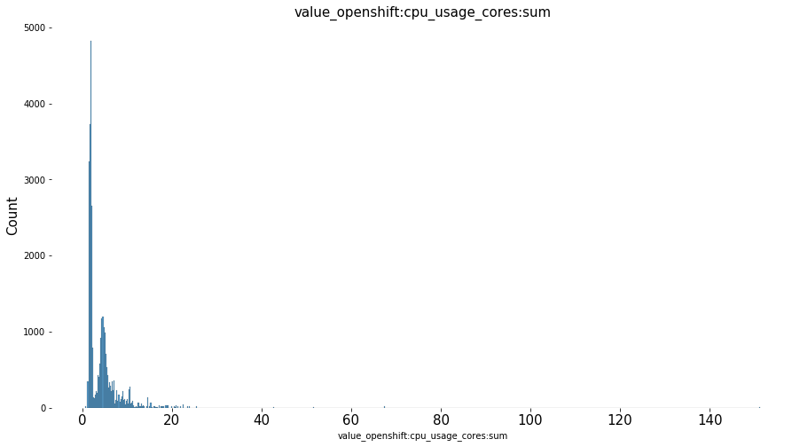
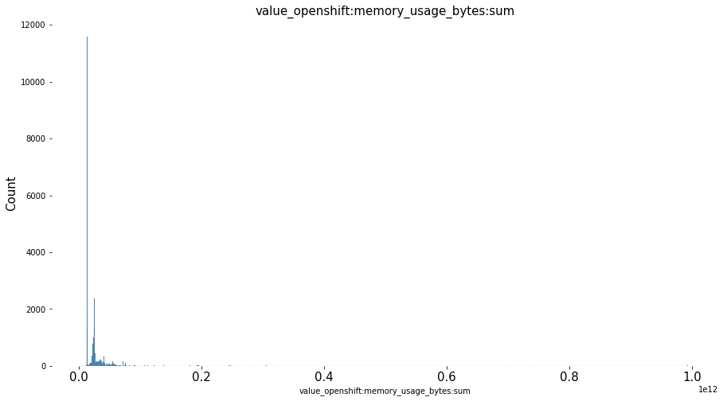
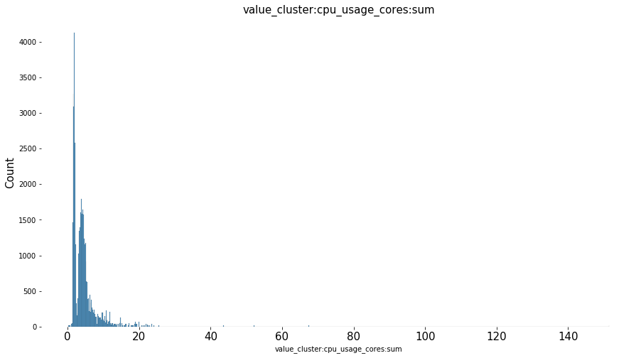
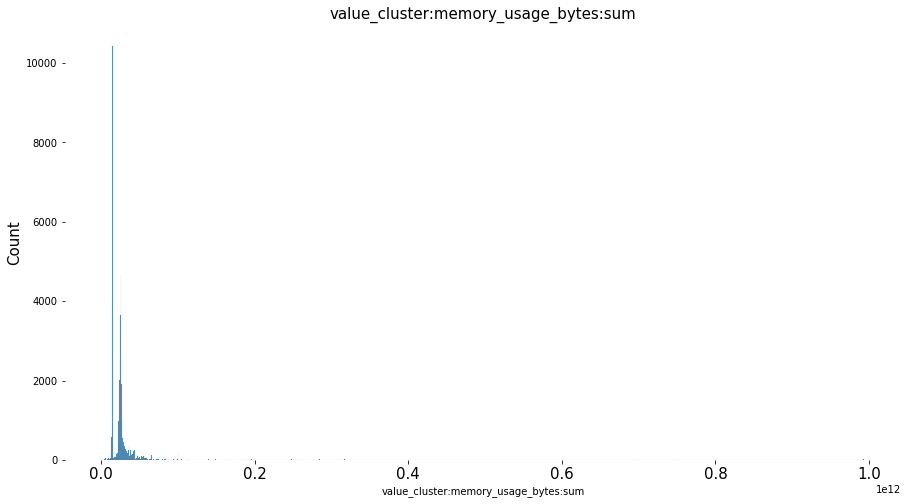
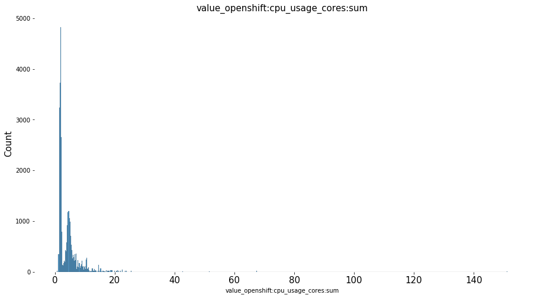
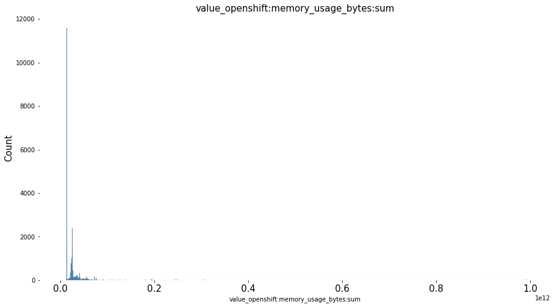
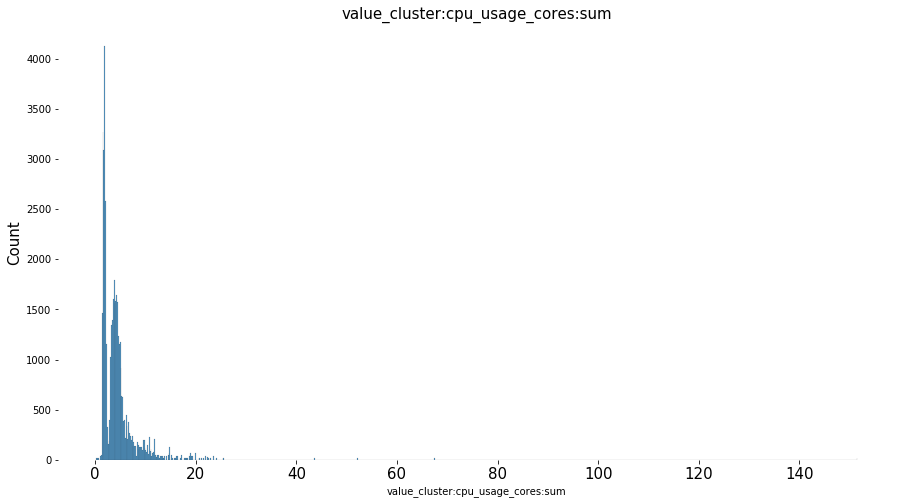
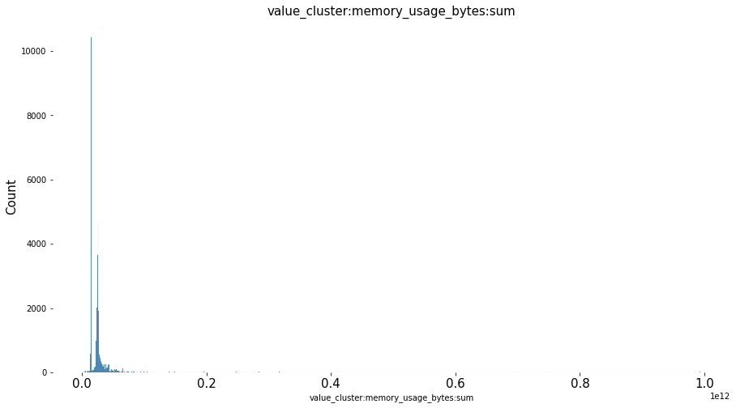

Exploratory Data Analysis¶
As a data scientist, I want to get the information about the types of workloads, images , containers, shapes, etc and their inter-relationships from the insight operator archive data-set. For this purpose, I would like to perform, EDA on the workload data from 4.8+ clusters collected from the Insight Operator Archive.
Exploratory Data Analysis is the initial analysis that we perform on the data to understand the data. It is important because before we create models or perform operations on the data, we should know what the data is all about, what all features it consists of, how these features are related to each other, etc.
In this notebook, the workload data from the insight operator archive is merged with the mapped data from pyxis database and data from the telemetry.
Containers, images and image streams are important concepts to understand when we set out to create and manage containerized software. An image holds a set of software that is ready to run, while a container is a running instance of the container image. An image stream provides a way of storing different versions of the same basic image. Those different versions are represented by different tags on the same image name.
Data Collection¶
Here we import the six kinds of dataset from the DH-PLAYPEN bucket.
Firstly, installing some useful packages used in the analysis.
import io
import boto3
import pandas as pd
import warnings
import os
import seaborn as sns
import matplotlib.pyplot as plt
import missingno as msno
import requests
from bs4 import BeautifulSoup
from dotenv import load_dotenv, find_dotenv
%matplotlib inline
load_dotenv(find_dotenv())
warnings.filterwarnings("ignore")
pd.set_option("display.max_rows", None)
pd.set_option("display.max_columns", None)
# CEPH Bucket variables
s3_endpoint_url = os.getenv("S3_ENDPOINT")
s3_access_key = os.getenv("S3_ACCESS_KEY")
s3_secret_key = os.getenv("S3_SECRET_KEY")
s3_bucket = os.getenv("S3_BUCKET")
# s3 resource to communicate with storage
s3 = boto3.resource(
"s3",
endpoint_url=s3_endpoint_url,
aws_access_key_id=s3_access_key,
aws_secret_access_key=s3_secret_key,
)
# access the parquet file as an s3 object
obj1 = s3.Object(
"DH-PLAYPEN", "ccx/fingerprinting/image_layers/date=2021-05-12/2021-05-12.parquet"
)
obj2 = s3.Object(
"DH-PLAYPEN", "ccx/fingerprinting/containers/date=2021-05-12/2021-05-12.parquet"
)
obj3 = s3.Object(
"DH-PLAYPEN", "ccx/fingerprinting/image_layers/dataframe_image_id.parquet"
)
obj4 = s3.Object("DH-PLAYPEN", "ccx/fingerprinting/containers/df_cont_image_id.parquet")
obj5 = s3.Object(
"DH-PLAYPEN", "ccx/fingerprinting/image_layers/telemeter_image_data.parquet"
)
obj6 = s3.Object(
"DH-PLAYPEN", "ccx/fingerprinting/containers/telemeter_cont_data.parquet"
)
obj7 = s3.Object(
"DH-PLAYPEN", "ccx/fingerprinting/image_layers/df_image_layerid.parquet"
)
# download the file into the buffer
buffer1 = io.BytesIO()
obj1.download_fileobj(buffer1)
buffer2 = io.BytesIO()
obj2.download_fileobj(buffer2)
buffer3 = io.BytesIO()
obj3.download_fileobj(buffer3)
buffer4 = io.BytesIO()
obj4.download_fileobj(buffer4)
buffer5 = io.BytesIO()
obj5.download_fileobj(buffer5)
buffer6 = io.BytesIO()
obj6.download_fileobj(buffer6)
buffer7 = io.BytesIO()
obj7.download_fileobj(buffer7)
# read the buffer and create the dataframe
image_layers_df = pd.read_parquet(buffer1)
image_id_map = pd.read_parquet(buffer3)
image_layer_idmap = pd.read_parquet(buffer7)
containers_df = pd.read_parquet(buffer2)
cont_id_map = pd.read_parquet(buffer4)
telemeter_image_data = pd.read_parquet(buffer5)
telemeter_cont_data = pd.read_parquet(buffer6)
We now have the six sets of dataframes,
Image layer dataset (image_layers_df)
Image name mapping for sha’s of image_id from image layer dataset (image_id_mapping)
Image layer id mapping for sha’s of the layers of the corresponding image_id (image_layer_idmap)
Containers dataset (containers_df)
Image name mapping for sha’s of the image_id from container dataset (cont_imageid_map)
Information from the telemeter for the corresponding cluster_id from image_layers_dataset (telemeter_image_data)
Information from the telemeter for the corresponding cluster_id from container dataset (telemeter_cont_data)
Image layer Dataset¶
image_layers_df.head(2)
| cluster_id | image_id | layer_image_id | layer_image_level | first_command | first_arg | archive_path | |
|---|---|---|---|---|---|---|---|
| 0 | 00003d61-9db1-4757-9cd1-84df271daeb9 | sha256:337c22cabe530213b14965f9ea69a92dbeb5104... | sha256:9ebb302e1fb002fb643091710dac46f8258781d... | 0 | icTsn2s_EIax | 2v1NneeWoS_9 | archives/compressed/00/00003d61-9db1-4757-9cd1... |
| 1 | 00003d61-9db1-4757-9cd1-84df271daeb9 | sha256:337c22cabe530213b14965f9ea69a92dbeb5104... | sha256:a74396a32e85c2feeedf76052ed3297859810c8... | 1 | icTsn2s_EIax | 2v1NneeWoS_9 | archives/compressed/00/00003d61-9db1-4757-9cd1... |
Pyxis data for the image SHA’s in image_id column of image_layers dataset
image_id_map = image_id_map.reset_index()
image_id_map.head(2)
| image_id | License | architecture | build-date | com.redhat.build-host | com.redhat.component | com.redhat.license_terms | description | distribution-scope | io.k8s.description | io.k8s.display-name | io.openshift.build.commit.id | io.openshift.build.commit.url | io.openshift.build.source-location | io.openshift.expose-services | io.openshift.maintainer.component | io.openshift.maintainer.product | io.openshift.tags | maintainer | name | release | summary | url | vcs-ref | vcs-type | vendor | version | io.openshift.s2i.scripts-url | io.s2i.scripts-url | usage | io.openshift.s2i.assemble-user | authoritative-source-url | io.fabric8.s2i.version.jolokia | org.concrt.version | org.jboss.product | org.jboss.product.amq.version | org.jboss.product.openjdk.version | org.jboss.product.version | com.redhat.deployments-dir | com.redhat.dev-mode | io.jenkins.version | |
|---|---|---|---|---|---|---|---|---|---|---|---|---|---|---|---|---|---|---|---|---|---|---|---|---|---|---|---|---|---|---|---|---|---|---|---|---|---|---|---|---|---|
| 0 | sha256:337c22cabe530213b14965f9ea69a92dbeb5104... | GPLv2+ | x86_64 | 2021-04-30T00:31:42.349887 | cpt-1004.osbs.prod.upshift.rdu2.redhat.com | ose-cli-artifacts-container | https://www.redhat.com/agreements | OpenShift is a platform for developing, buildi... | public | OpenShift is a platform for developing, buildi... | OpenShift Clients | a765590e1b87b014b9d81f9ea534460d6dff73f2 | https://github.com/openshift/oc/commit/a765590... | https://github.com/openshift/oc | oc | OpenShift Container Platform | openshift,cli | Red Hat, Inc. | openshift/ose-cli-artifacts | 202104292348.p0 | Provides the latest release of Red Hat Univers... | https://access.redhat.com/containers/#/registr... | 43f412b2932a5ecfe5ebedcab38cf2915cf03813 | git | Red Hat, Inc. | v4.8.0 | None | None | None | None | None | None | None | None | None | None | None | None | None | None | |
| 1 | sha256:3574d6c1fcc46e1ebd41b7b887b92035ea18213... | GPLv2+ | x86_64 | 2021-04-30T00:22:29.539443 | cpt-1008.osbs.prod.upshift.rdu2.redhat.com | openshift-enterprise-cli-container | https://www.redhat.com/agreements | OpenShift is a platform for developing, buildi... | public | OpenShift is a platform for developing, buildi... | OpenShift Client | a765590e1b87b014b9d81f9ea534460d6dff73f2 | https://github.com/openshift/oc/commit/a765590... | https://github.com/openshift/oc | oc | OpenShift Container Platform | openshift,cli | Red Hat, Inc. | openshift/ose-cli | 202104292348.p0 | Provides the latest release of Red Hat Univers... | https://access.redhat.com/containers/#/registr... | d3ae20f4e2fac18ea671cf12636d16791146a460 | git | Red Hat, Inc. | v4.8.0 | None | None | None | None | None | None | None | None | None | None | None | None | None | None |
Pyxis data for SHA’s in image_layer_id column of image_layers dataset
image_layer_idmap = image_layer_idmap.reset_index()
image_layer_idmap = image_layer_idmap.rename(columns={"image_id": "layer_image_id"})
image_layer_idmap.head(2)
| layer_image_id | architecture | build-date | com.redhat.build-host | com.redhat.component | com.redhat.license_terms | description | distribution-scope | io.k8s.description | io.k8s.display-name | io.openshift.expose-services | io.openshift.tags | maintainer | name | release | summary | url | vcs-ref | vcs-type | vendor | version | io.openshift.s2i.scripts-url | io.s2i.scripts-url | com.redhat.deployments-dir | com.redhat.dev-mode | com.redhat.dev-mode.port | help | usage | io.openshift.s2i.assemble-user | authoritative-source-url | License | Architecture | Authoritative_Registry | BZComponent | Build_Host | Name | Release | Vendor | Version | com.ibm.hdm.common.branch | com.ibm.hdm.common.buildnumber | com.ibm.hdm.common.commitId | org.label-schema.vcs-ref | org.label-schema.vcs-url | io.openshift.build.commit.id | io.openshift.build.commit.url | io.openshift.build.source-location | io.openshift.maintainer.product | io.openshift.maintainer.component | io.cekit.version | io.fabric8.s2i.version.jolokia | io.fabric8.s2i.version.maven | io.openshift.s2i.destination | org.jboss.container.deployments-dir | org.jboss.product | org.jboss.product.openjdk.version | org.jboss.product.version | org.concrt.version | org.jboss.product.amq.version | com.ibm.license_terms | org.label-schema.build-date | org.label-schema.license | org.label-schema.name | org.label-schema.schema-version | org.label-schema.vendor | io.fabric8.s2i.version.karaf | io.fabric8.s2i.version.prometheus.jmx_exporter | org.jboss.deployments-dir | org.jboss.product.eap.version | |
|---|---|---|---|---|---|---|---|---|---|---|---|---|---|---|---|---|---|---|---|---|---|---|---|---|---|---|---|---|---|---|---|---|---|---|---|---|---|---|---|---|---|---|---|---|---|---|---|---|---|---|---|---|---|---|---|---|---|---|---|---|---|---|---|---|---|---|---|---|---|
| 0 | sha256:fdb393d8227cbe9756537d3f215a3098ae797bd... | x86_64 | 2021-02-10T00:15:26.710361 | cpt-1004.osbs.prod.upshift.rdu2.redhat.com | ubi8-container | https://www.redhat.com/en/about/red-hat-end-us... | The Universal Base Image is designed and engin... | public | The Universal Base Image is designed and engin... | Red Hat Universal Base Image 8 | base rhel8 | Red Hat, Inc. | ubi8 | 289 | Provides the latest release of Red Hat Univers... | https://access.redhat.com/containers/#/registr... | 7dd0869dabeebe7119fc04b16767c5991bcaa865 | git | Red Hat, Inc. | 8.3 | None | None | None | None | None | None | None | None | None | None | None | None | None | None | None | None | None | None | None | None | None | None | None | None | None | None | None | None | None | None | None | None | None | None | None | None | None | None | None | None | None | None | None | None | None | None | None | None | |
| 1 | sha256:64607cc74f9cbe0e12f167547df0cf661de5a8b... | x86_64 | 2021-03-30T18:30:01.465792 | cpt-1003.osbs.prod.upshift.rdu2.redhat.com | ubi8-container | https://www.redhat.com/en/about/red-hat-end-us... | The Universal Base Image is designed and engin... | public | The Universal Base Image is designed and engin... | Red Hat Universal Base Image 8 | base rhel8 | Red Hat, Inc. | ubi8 | 297 | Provides the latest release of Red Hat Univers... | https://access.redhat.com/containers/#/registr... | 7dd0869dabeebe7119fc04b16767c5991bcaa865 | git | Red Hat, Inc. | 8.3 | None | None | None | None | None | None | None | None | None | None | None | None | None | None | None | None | None | None | None | None | None | None | None | None | None | None | None | None | None | None | None | None | None | None | None | None | None | None | None | None | None | None | None | None | None | None | None | None |
Telemetry dataset for the corresponding cluster_id from image_layers dataset
telemeter_image_data.rename(columns={"_id": "cluster_id"}, inplace=True)
telemeter_image_data.head(2)
| cluster_id | timestamp | value_workload:cpu_usage_cores:sum | value_workload:memory_usage_bytes:sum | value_openshift:cpu_usage_cores:sum | value_openshift:memory_usage_bytes:sum | value_cluster:cpu_usage_cores:sum | value_cluster:memory_usage_bytes:sum | |
|---|---|---|---|---|---|---|---|---|
| 0 | 00003d61-9db1-4757-9cd1-84df271daeb9 | 1620860062 | 0.03230751556666692 | 389971968 | 1.9291393691359602 | 14560608256 | 1.9614468847026272 | 14950580224 |
| 1 | 00351e6e-53ce-465e-9493-cf0cd2367049 | 1620852056 | 0.030943035959259964 | 385421312 | 1.7056283926121354 | 14386823168 | 1.7365714285713953 | 14772244480 |
Containers Dataset¶
containers_df.head(2)
| cluster_id | namespace | shape | shape_instances | image_id | first_command | first_arg | init_container | archive_path | |
|---|---|---|---|---|---|---|---|---|---|
| 0 | 00003d61-9db1-4757-9cd1-84df271daeb9 | 0LiT6ZNtbpYL | sha256:3ecf29979b2722bf4a82a5e7a954e8685820720... | 1 | sha256:f46f210d6023bec16e68340b484a8881ce46d5e... | None | 47DEQpj8HBSa | False | archives/compressed/00/00003d61-9db1-4757-9cd1... |
| 1 | 00003d61-9db1-4757-9cd1-84df271daeb9 | 0LiT6ZNtbpYL | sha256:3ecf29979b2722bf4a82a5e7a954e8685820720... | 1 | sha256:edb9aaacf421c6dc45b20324e8699cec02f26bf... | n9CdwzVF-cwZ | RNOaw_AuQeIY | False | archives/compressed/00/00003d61-9db1-4757-9cd1... |
Pyxis data for the image SHA’s in image_id column of container dataset
cont_id_map = cont_id_map.reset_index()
cont_id_map.head(2)
| image_id | License | architecture | build-date | com.redhat.build-host | com.redhat.component | com.redhat.license_terms | description | distribution-scope | io.k8s.description | io.k8s.display-name | io.openshift.build.commit.id | io.openshift.build.commit.url | io.openshift.build.source-location | io.openshift.expose-services | io.openshift.maintainer.component | io.openshift.maintainer.product | io.openshift.tags | maintainer | name | release | summary | url | vcs-ref | vcs-type | vendor | version | io.openshift.maintainer.subcomponent | io.openshift.release.operator | io.openshift.build.versions | com.redhat.delivery.appregistry | upstream-vcs-ref | upstream-vcs-type | upstream-version | org.kubevirt.hco.csv-generator.v1 | io.openshift.s2i.scripts-url | io.s2i.scripts-url | usage | io.openshift.s2i.assemble-user | display-name | com.redhat.delivery.operator.bundle | com.redhat.openshift.versions | io.cekit.version | operators.operatorframework.io.bundle.channel.default.v1 | operators.operatorframework.io.bundle.channels.v1 | operators.operatorframework.io.bundle.manifests.v1 | operators.operatorframework.io.bundle.mediatype.v1 | operators.operatorframework.io.bundle.metadata.v1 | operators.operatorframework.io.bundle.package.v1 | licenses | CEPH_POINT_RELEASE | GIT_BRANCH | GIT_CLEAN | GIT_COMMIT | GIT_REPO | RELEASE | ocs.tags | com.redhat.deployments-dir | com.redhat.dev-mode | com.redhat.dev-mode.port | help | operators.operatorframework.io.index.database.v1 | authoritative-source-url | license | io.fabric8.s2i.version.jolokia | io.fabric8.s2i.version.maven | io.openshift.s2i.destination | org.jboss.container.deployments-dir | org.jboss.product | org.jboss.product.eap.version | org.jboss.product.openjdk.version | org.jboss.product.sso.version | org.jboss.product.version | istio_version | openshift_build | operator_build | run | org.concrt.version | org.jboss.product.amq.version | io.openshift.build.commit.author | io.openshift.build.commit.date | io.openshift.build.commit.message | io.openshift.build.commit.ref | io.openshift.build.name | io.openshift.build.namespace | io.openshift.build.source-context-dir | jenkins.build.number | jenkins.tarball.url | io.jenkins.version | build-utility | org.label-schema.vcs-ref | org.label-schema.vcs-url | org.label-schema.description | org.label-schema.license | org.label-schema.name | org.label-schema.schema-version | org.label-schema.vendor | JAVA_VERSION | com.ibm.events.commitid | com.ibm.eventstreams.base-for-bedrock.icp-linux-amd64.commitid | com.ibm.eventstreams.base-for-bedrock.icp-linux-amd64.job | com.ibm.eventstreams.base-for-bedrock.icp-linux-amd64.license | com.ibm.eventstreams.base-for-bedrock.icp-linux-amd64.maintainer | com.ibm.eventstreams.base-for-bedrock.icp-linux-amd64.name | com.ibm.eventstreams.base-for-bedrock.icp-linux-amd64.version | com.ibm.eventstreams.openjdk-11-sdk-for-bedrock.icp-linux-amd64.commitid | com.ibm.eventstreams.openjdk-11-sdk-for-bedrock.icp-linux-amd64.job | com.ibm.eventstreams.openjdk-11-sdk-for-bedrock.icp-linux-amd64.license | com.ibm.eventstreams.openjdk-11-sdk-for-bedrock.icp-linux-amd64.maintainer | com.ibm.eventstreams.openjdk-11-sdk-for-bedrock.icp-linux-amd64.name | com.ibm.eventstreams.openjdk-11-sdk-for-bedrock.icp-linux-amd64.version | com.redhat.apb.runtime | com.microsoft.product | com.microsoft.version | |
|---|---|---|---|---|---|---|---|---|---|---|---|---|---|---|---|---|---|---|---|---|---|---|---|---|---|---|---|---|---|---|---|---|---|---|---|---|---|---|---|---|---|---|---|---|---|---|---|---|---|---|---|---|---|---|---|---|---|---|---|---|---|---|---|---|---|---|---|---|---|---|---|---|---|---|---|---|---|---|---|---|---|---|---|---|---|---|---|---|---|---|---|---|---|---|---|---|---|---|---|---|---|---|---|---|---|---|---|---|---|---|---|---|---|---|
| 0 | sha256:f46f210d6023bec16e68340b484a8881ce46d5e... | ASL 2.0 | x86_64 | 2021-05-04T21:54:58.392948 | cpt-1007.osbs.prod.upshift.rdu2.redhat.com | kube-rbac-proxy-container | https://www.redhat.com/agreements | This is a proxy, that can perform Kubernetes R... | public | This is a proxy, that can perform Kubernetes R... | kube-rbac-proxy | 8d11a8fa9ce252cd25794c0d9280cbdc0c2affcb | https://github.com/openshift/kube-rbac-proxy/c... | https://github.com/openshift/kube-rbac-proxy | Monitoring | OpenShift Container Platform | kubernetes | OpenShift Monitoring Team <team-monitoring@red... | openshift/ose-kube-rbac-proxy | 202105042126.p0 | https://access.redhat.com/containers/#/registr... | 12ef9d3cc226f6bd4a898d4b23ffa1ec5d3d27f1 | git | Red Hat, Inc. | v4.8.0 | None | None | None | None | None | None | None | None | None | None | None | None | None | None | None | None | None | None | None | None | None | None | None | None | None | None | None | None | None | None | None | None | None | None | None | None | None | None | None | None | None | None | None | None | None | None | None | None | None | None | None | None | None | None | None | None | None | None | None | None | None | None | None | None | None | None | None | None | None | None | None | None | None | None | None | None | None | None | None | None | None | None | None | None | None | None | None | ||
| 1 | sha256:edb9aaacf421c6dc45b20324e8699cec02f26bf... | GPLv2+ | x86_64 | 2021-05-04T22:05:48.018566 | cpt-1006.osbs.prod.upshift.rdu2.redhat.com | ose-multus-admission-controller-container | https://www.redhat.com/agreements | This is a component of OpenShift Container Pla... | public | This is a component of OpenShift Container Pla... | Container Networking Plugins | a7312f5e55e9f34cc8b20f6cbfe1af0f363ca1e6 | https://github.com/openshift/multus-admission-... | https://github.com/openshift/multus-admission-... | Networking | OpenShift Container Platform | openshift | Doug Smith <dosmith@redhat.com> | openshift/ose-multus-admission-controller | 202105042126.p0 | Provides the latest release of Red Hat Univers... | https://access.redhat.com/containers/#/registr... | 00692865fc2dd0c845bb20c688dbf2cb7e239062 | git | Red Hat, Inc. | v4.8.0 | multus | None | None | None | None | None | None | None | None | None | None | None | None | None | None | None | None | None | None | None | None | None | None | None | None | None | None | None | None | None | None | None | None | None | None | None | None | None | None | None | None | None | None | None | None | None | None | None | None | None | None | None | None | None | None | None | None | None | None | None | None | None | None | None | None | None | None | None | None | None | None | None | None | None | None | None | None | None | None | None | None | None | None | None | None | None | None |
Telemetry dataset for the corresponding cluster_id from containers dataset
telemeter_cont_data.rename(columns={"_id": "cluster_id"}, inplace=True)
telemeter_cont_data.head(2)
| cluster_id | timestamp | value_workload:cpu_usage_cores:sum | value_workload:memory_usage_bytes:sum | value_openshift:cpu_usage_cores:sum | value_openshift:memory_usage_bytes:sum | value_cluster:cpu_usage_cores:sum | value_cluster:memory_usage_bytes:sum | |
|---|---|---|---|---|---|---|---|---|
| 0 | 00003d61-9db1-4757-9cd1-84df271daeb9 | 1620860062 | 0.03230751556666692 | 389971968 | 1.9291393691359602 | 14560608256 | 1.9614468847026272 | 14950580224 |
| 1 | 00351e6e-53ce-465e-9493-cf0cd2367049 | 1620852056 | 0.030943035959259964 | 385421312 | 1.7056283926121354 | 14386823168 | 1.7365714285713953 | 14772244480 |
Using the mapping techniques from the issue, we were able to map most (not all) of the image_id from the image layers dataset and containers datasets. Information from the telemetry dataset were also extracted (issue). In the next steps, we try to merge the respective dataset with respect to the image_id and cluster_id.
In the next section, we take the information about the product name and summary from the mapped dataset.
image_id_map = image_id_map[["image_id", "name", "summary"]]
cont_id_map = cont_id_map[["image_id", "name", "summary"]]
Merging the datasets¶
We do the outer merging in-order to keep all the information including those ids which were not mapped and those for which we could not extract any information from the telemeter dataset.
Merged dataframe for image layers dataset
We will be merging the workload dataset with Pyxis data on image_id column, and merging with the telemeter data on cluster_id column.
df_image1 = pd.merge(image_layers_df, image_id_map, on="image_id", how="outer")
df_image = pd.merge(df_image1, telemeter_image_data, on="cluster_id", how="outer")
df_image.head(2)
| cluster_id | image_id | layer_image_id | layer_image_level | first_command | first_arg | archive_path | name | summary | timestamp | value_workload:cpu_usage_cores:sum | value_workload:memory_usage_bytes:sum | value_openshift:cpu_usage_cores:sum | value_openshift:memory_usage_bytes:sum | value_cluster:cpu_usage_cores:sum | value_cluster:memory_usage_bytes:sum | |
|---|---|---|---|---|---|---|---|---|---|---|---|---|---|---|---|---|
| 0 | 00003d61-9db1-4757-9cd1-84df271daeb9 | sha256:337c22cabe530213b14965f9ea69a92dbeb5104... | sha256:9ebb302e1fb002fb643091710dac46f8258781d... | 0 | icTsn2s_EIax | 2v1NneeWoS_9 | archives/compressed/00/00003d61-9db1-4757-9cd1... | openshift/ose-cli-artifacts | Provides the latest release of Red Hat Univers... | 1.620860e+09 | 0.03230751556666692 | 389971968 | 1.9291393691359602 | 14560608256 | 1.9614468847026272 | 14950580224 |
| 1 | 00003d61-9db1-4757-9cd1-84df271daeb9 | sha256:337c22cabe530213b14965f9ea69a92dbeb5104... | sha256:a74396a32e85c2feeedf76052ed3297859810c8... | 1 | icTsn2s_EIax | 2v1NneeWoS_9 | archives/compressed/00/00003d61-9db1-4757-9cd1... | openshift/ose-cli-artifacts | Provides the latest release of Red Hat Univers... | 1.620860e+09 | 0.03230751556666692 | 389971968 | 1.9291393691359602 | 14560608256 | 1.9614468847026272 | 14950580224 |
Merged dataframe for containers dataset
df_cont1 = pd.merge(containers_df, cont_id_map, on="image_id", how="outer")
df_cont = pd.merge(df_cont1, telemeter_image_data, on="cluster_id", how="outer")
df_cont.head(2)
| cluster_id | namespace | shape | shape_instances | image_id | first_command | first_arg | init_container | archive_path | name | summary | timestamp | value_workload:cpu_usage_cores:sum | value_workload:memory_usage_bytes:sum | value_openshift:cpu_usage_cores:sum | value_openshift:memory_usage_bytes:sum | value_cluster:cpu_usage_cores:sum | value_cluster:memory_usage_bytes:sum | |
|---|---|---|---|---|---|---|---|---|---|---|---|---|---|---|---|---|---|---|
| 0 | 00003d61-9db1-4757-9cd1-84df271daeb9 | 0LiT6ZNtbpYL | sha256:3ecf29979b2722bf4a82a5e7a954e8685820720... | 1 | sha256:f46f210d6023bec16e68340b484a8881ce46d5e... | None | 47DEQpj8HBSa | False | archives/compressed/00/00003d61-9db1-4757-9cd1... | openshift/ose-kube-rbac-proxy | 1.620860e+09 | 0.03230751556666692 | 389971968 | 1.9291393691359602 | 14560608256 | 1.9614468847026272 | 14950580224 | |
| 1 | 00003d61-9db1-4757-9cd1-84df271daeb9 | 0LiT6ZNtbpYL | sha256:1e2788d7ec32815d3a0c2ded714ea4f57fc1c05... | 1 | sha256:f46f210d6023bec16e68340b484a8881ce46d5e... | None | 47DEQpj8HBSa | False | archives/compressed/00/00003d61-9db1-4757-9cd1... | openshift/ose-kube-rbac-proxy | 1.620860e+09 | 0.03230751556666692 | 389971968 | 1.9291393691359602 | 14560608256 | 1.9614468847026272 | 14950580224 |
Inspecting the Container Dataset¶
We have 19 different features in container dataset. At first, we explored to see the distribution of first_Command, first_arg, name and summary in the dataset.
Checking different features in the dataset,
df_cont.info()
<class 'pandas.core.frame.DataFrame'>
Int64Index: 456825 entries, 0 to 456824
Data columns (total 18 columns):
# Column Non-Null Count Dtype
--- ------ -------------- -----
0 cluster_id 456825 non-null object
1 namespace 456825 non-null object
2 shape 456825 non-null object
3 shape_instances 456825 non-null int64
4 image_id 456825 non-null object
5 first_command 267122 non-null object
6 first_arg 328832 non-null object
7 init_container 456825 non-null bool
8 archive_path 456825 non-null object
9 name 269715 non-null object
10 summary 269710 non-null object
11 timestamp 422041 non-null float64
12 value_workload:cpu_usage_cores:sum 287795 non-null object
13 value_workload:memory_usage_bytes:sum 280825 non-null object
14 value_openshift:cpu_usage_cores:sum 287072 non-null object
15 value_openshift:memory_usage_bytes:sum 280825 non-null object
16 value_cluster:cpu_usage_cores:sum 414138 non-null object
17 value_cluster:memory_usage_bytes:sum 422041 non-null object
dtypes: bool(1), float64(1), int64(1), object(15)
memory usage: 63.2+ MB
From the above info, we see that there are certain features which containes the missing values. To visualise the missing values in the dataset. We take the help of missingno packages. Some of the key points from the msno dataset are.
Features like
cluster_id,namespace,shape,shape_instances,image_id,init_container,archive_pathdoes not have any missing values.first_command and first argument have missing values.
We could not map all the image_id from the Pyxis database, the results is clearly seen in the distribution of missing values in the dataset.
Values extracted from the telemetry also have missing values because we could not extract the information from the telemetry for the given
cluster_idfrom the insight operator archive.
msno.matrix(df_cont)
<matplotlib.axes._subplots.AxesSubplot at 0x7f7543506d00>
Creating a report using the dataprep package and saving it as a html file.
cont_columns = ["name", "summary", "first_command", "first_arg"]
for col in cont_columns:
fig, ax = plt.subplots(1, 1, figsize=(15, 8))
sns.countplot(
y=df_cont[col][1:],
data=df_cont.iloc[1:],
order=df_cont[col][1:].value_counts().iloc[:20].index,
palette="rainbow",
)
plt.title(col, fontsize=15)
plt.xlabel("Count", fontsize=15)
plt.ylabel(" ")
plt.yticks(fontsize=15)
plt.box(False)
The distribution plots for top 20 name, summary, first_command and first_arg shows that the product openshift/ose-kube-rbac-proxy has the highest count of all. SImilarly, from the summary, we can see that Red Hat UBI image has the maximum count. Furthermore, we can also see that certain commands and arguments are present in high amount in the container dataset.
Inspecting the Image layer dataset¶
We have 17 different features in image_layers dataset. At first, we explored to see the distribution of first_Command, first_arg, name and summary in the dataset.
The different features in the dataset are listed below.
df_image.info()
<class 'pandas.core.frame.DataFrame'>
Int64Index: 47368 entries, 0 to 47367
Data columns (total 16 columns):
# Column Non-Null Count Dtype
--- ------ -------------- -----
0 cluster_id 47368 non-null object
1 image_id 47368 non-null object
2 layer_image_id 47368 non-null object
3 layer_image_level 47368 non-null int64
4 first_command 34038 non-null object
5 first_arg 41209 non-null object
6 archive_path 47368 non-null object
7 name 27524 non-null object
8 summary 27524 non-null object
9 timestamp 45186 non-null float64
10 value_workload:cpu_usage_cores:sum 30771 non-null object
11 value_workload:memory_usage_bytes:sum 30137 non-null object
12 value_openshift:cpu_usage_cores:sum 30681 non-null object
13 value_openshift:memory_usage_bytes:sum 30137 non-null object
14 value_cluster:cpu_usage_cores:sum 44351 non-null object
15 value_cluster:memory_usage_bytes:sum 45186 non-null object
dtypes: float64(1), int64(1), object(14)
memory usage: 6.1+ MB
Similar to the container dataset. From the above info, we see that there are certain features which containes the missing values. To visualise the missing values in the dataset. We take the help of missingno packages. Some of the key points from the msno dataset are.
Features like
cluster_id,image_id,layer_image_id,layer_image_level,archive_pathdoes not have any missing values.first_command and first argument have missing values.
We could not map all the image_id from the Pyxis database, the results is clearly seen in the distribution of missing values in the dataset.
Values extracted from the telemetry also have missing values because we could not extract the information from the telemetry for the given
cluster_idfrom the insight operator archive.
msno.matrix(df_image)
<matplotlib.axes._subplots.AxesSubplot at 0x7f743ebd0640>
image_columns = ["name", "summary", "first_command", "first_arg"]
for col in image_columns:
fig, ax = plt.subplots(1, 1, figsize=(15, 8))
sns.countplot(
y=df_image[col][1:],
data=df_image.iloc[1:],
order=df_image[col][1:].value_counts().iloc[:].index,
palette="rainbow",
)
plt.title(col, fontsize=15)
plt.xlabel("Count", fontsize=15)
plt.ylabel(" ")
plt.yticks(fontsize=15)
plt.box(False)
The distribution plots for top 20 name, summary, first_command and first_arg shows that the image openshift/ose-cli-artifacts has the highest count of all. SImilarly, from the summary, we can see that Red Hat UBI image has the maximum count. Furthermore, we can also see that certain commands and arguments are present in high amount in the image layers dataset.
Some FAQs¶
How many unique image name are there in image layer dataset and container dataset?¶
For the image layer dataset, the list of unique product name are listed below.
print(df_image.name.unique())
['openshift/ose-cli-artifacts' 'openshift/ose-cli'
'openshift/ose-oauth-proxy' nan 'rhel8/postgresql-12'
'rhscl/postgresql-10-rhel7' 'rhel8/redis-5' 'rhel8/postgresql-10'
'rhscl/mongodb-36-rhel7' 'openshift/ose-tests'
'openshift/ose-must-gather' 'jboss-amq-6/amq63-openshift'
'3scale-amp2/system-rhel7' '3scale-amp2/apicast-gateway-rhel8'
'rhscl/mysql-57-rhel7' 'rhscl/redis-32-rhel7' '3scale-amp2/backend-rhel7'
'3scale-amp2/memcached-rhel7' '3scale-amp2/zync-rhel7' 'rhel8/mysql-80'
'openshift/ose-jenkins' 'ubi8/ruby-27' 'openshift/ose-tools'
'ubi8/dotnet-50' 'openshift/ose-grafana' 'rhel8/httpd-24']
print(
"The number of unique image name extracted for image layer dataset is :",
df_image.name.nunique(),
)
The number of unique image name extracted for image layer dataset is : 25
For the container dataset, the list of unique product names are list below:
print(df_cont.name.unique())
['openshift/ose-kube-rbac-proxy'
'openshift/ose-multus-admission-controller' 'openshift/ose-multus-cni'
'openshift/ose-egress-router-cni'
'openshift/ose-container-networking-plugins'
'openshift/ose-multus-route-override-cni'
'openshift/ose-multus-whereabouts-ipam-cni'
'openshift/ose-network-metrics-daemon'
'openshift/ose-cluster-config-operator' nan
'openshift/ose-operator-marketplace' 'openshift/ose-etcd'
'openshift/ose-hyperkube' 'openshift/ose-cluster-kube-scheduler-operator'
'openshift/ose-cluster-storage-operator'
'openshift/ose-csi-snapshot-controller'
'openshift/ose-cluster-csi-snapshot-controller-operator'
'openshift/ose-csi-snapshot-validation-webhook'
'openshift/ose-oauth-server'
'openshift/ose-kube-storage-version-migrator'
'openshift/ose-cluster-policy-controller'
'openshift/ose-cluster-kube-controller-manager-operator'
'openshift/ose-service-ca-operator'
'openshift/ose-operator-lifecycle-manager'
'openshift/ose-cloud-credential-operator'
'openshift/ose-cluster-network-operator' 'openshift/ose-coredns'
'openshift/ose-cli' 'openshift/ose-cluster-ingress-operator'
'openshift/ose-oauth-apiserver' 'openshift/ose-console-operator'
'openshift/ose-insights-operator' 'openshift/ose-cluster-dns-operator'
'openshift/ose-cluster-node-tuning-operator'
'openshift/ose-cluster-samples-operator'
'openshift/ose-cluster-kube-apiserver-operator'
'openshift/ose-cluster-machine-approver'
'openshift/ose-cluster-kube-storage-version-migrator-operator'
'openshift/ose-cluster-etcd-operator' 'rhacm2/multicloud-manager-rhel8'
'openshift/ose-haproxy-router'
'openshift/ose-cluster-openshift-controller-manager-operator'
'openshift/ose-cluster-autoscaler-operator'
'openshift/ose-cluster-baremetal-operator'
'openshift/ose-machine-api-operator'
'openshift/ose-cluster-authentication-operator'
'openshift/ose-machine-config-operator' 'openshift/ose-oauth-proxy'
'openshift/ose-cluster-openshift-apiserver-operator'
'openshift/ose-prometheus-alertmanager'
'openshift/ose-prometheus-config-reloader'
'openshift/ose-prom-label-proxy'
'openshift/ose-cluster-monitoring-operator' 'openshift/ose-grafana'
'openshift/ose-kube-state-metrics'
'openshift/ose-prometheus-node-exporter'
'openshift/ose-openshift-state-metrics'
'openshift/ose-k8s-prometheus-adapter' 'openshift/ose-prometheus'
'openshift/ose-thanos' 'openshift/ose-prometheus-operator'
'openshift/ose-telemeter' 'openshift/ose-openshift-apiserver'
'openshift/ose-cluster-image-registry-operator'
'openshift/ose-docker-registry'
'openshift/ose-openshift-controller-manager' 'openshift/ose-console'
'openshift/ose-cli-artifacts' 'rhacm2/registration-rhel8-operator'
'rhacm2/registration-rhel8' 'rhacm2/work-rhel8' 'openshift/ose-sdn'
'openshift/ose-ovn-kubernetes'
'openshift/ose-baremetal-machine-controllers'
'openshift/ose-ironic-inspector' 'openshift/ose-baremetal-operator'
'openshift/ose-ironic-ipa-downloader'
'openshift/ose-ironic-machine-os-downloader'
'openshift/ose-baremetal-runtimecfg'
'openshift/ose-keepalived-ipfailover' 'openshift/ose-ironic'
'rhacm2/multicluster-operators-subscription-rhel8'
'rhacm2/klusterlet-addon-lease-controller-rhel8'
'rhacm2/iam-policy-controller-rhel8'
'rhacm2/config-policy-controller-rhel8' 'rhacm2/search-collector-rhel8'
'rhscl/postgresql-10-rhel7' 'rhacm2/application-ui-rhel8'
'rhacm2/cert-manager-controller-rhel8'
'rhacm2/clusterlifecycle-state-metrics-rhel8' 'rhacm2/console-rhel8'
'rhacm2/console-api-rhel8' 'rhacm2/console-header-rhel8'
'rhacm2/grc-ui-rhel8' 'rhacm2/openshift-hive-rhel7'
'rhacm2/endpoint-rhel8-operator' 'rhacm2/rcm-controller-rhel8'
'rhacm2/multicluster-observability-rhel8-operator'
'rhacm2/multicluster-operators-application-rhel8'
'rhacm2/multicluster-operators-channel-rhel8'
'rhacm2/multicluster-operators-deployable-rhel8'
'rhacm2/multiclusterhub-rhel8' 'rhacm2/search-rhel8'
'rhacm2/redisgraph-tls-rhel8' 'rhacm2/search-ui-rhel8'
'rhacm2/submariner-addon-rhel8' 'openshift/compliance-operator'
'openshift-pipelines-tech-preview/pipelines-operator-proxy-rhel8'
'openshift-pipelines-tech-preview/pipelines-controller-rhel8'
'openshift-pipelines-tech-preview/pipelines-triggers-controller-rhel8'
'openshift-pipelines-tech-preview/pipelines-triggers-webhook-rhel8'
'quay/quay-container-security-operator-rhel8'
'container-native-virtualization/virt-cdi-operator'
'container-native-virtualization/hyperconverged-cluster-operator'
'container-native-virtualization/node-maintenance-operator'
'container-native-virtualization/virt-operator'
'container-native-virtualization/vm-import-operator-rhel8'
'container-native-virtualization/virt-cdi-uploadproxy'
'container-native-virtualization/cnv-containernetworking-plugins'
'container-native-virtualization/kubemacpool'
'container-native-virtualization/kubevirt-cpu-node-labeller'
'container-native-virtualization/kubevirt-kvm-info-nfd-plugin'
'container-native-virtualization/kubevirt-cpu-model-nfd-plugin'
'container-native-virtualization/kubernetes-nmstate-handler-rhel8'
'container-native-virtualization/virt-api'
'container-native-virtualization/virt-controller'
'container-native-virtualization/virt-handler'
'container-native-virtualization/vm-import-controller-rhel8'
'openshift/ose-csi-external-attacher' 'openshift/ose-csi-livenessprobe'
'openshift/ose-csi-external-provisioner'
'openshift/ose-csi-external-resizer'
'openshift/ose-csi-external-snapshotter'
'openshift/ose-csi-node-driver-registrar'
'amq7/amq-streams-rhel7-operator' 'openshift/ose-gcp-machine-controllers'
'openshift/ose-gcp-pd-csi-driver'
'openshift/ose-gcp-pd-csi-driver-operator'
'openshift/ose-local-storage-diskmaker'
'openshift/ose-local-storage-operator' 'rhacm2/grc-ui-api-rhel8'
'rhacm2/governance-policy-propagator-rhel8'
'rhacm2/klusterlet-addon-controller-rhel8'
'rhacm2/managedcluster-import-controller-rhel8'
'rhacm2/provider-credential-controller-rhel8'
'rhacm2/search-aggregator-rhel8' 'rhacm2/cert-policy-controller-rhel8'
'rhacm2/governance-policy-template-sync-rhel8'
'rhacm2/governance-policy-spec-sync-rhel8'
'openshift/ose-aws-machine-controllers'
'openshift/ose-aws-ebs-csi-driver'
'openshift/ose-aws-ebs-csi-driver-operator'
'openshift/ose-aws-pod-identity-webhook'
'openshift/ose-cluster-logging-operator'
'openshift-pipelines/pipelines-operator-proxy-rhel8'
'openshift-pipelines/pipelines-controller-rhel8'
'openshift-pipelines/pipelines-triggers-controller-rhel8'
'openshift-pipelines/pipelines-triggers-core-interceptors-rhel8'
'openshift-gitops-1/gitops-rhel8' 'openshift-gitops-1/kam-delivery-rhel8'
'openshift-pipelines/pipelines-rhel8-operator' 'ansible-tower'
'amq7/amq-streams-kafka-26-rhel7' 'amq7/amq-streams-kafka-25-rhel7'
'rhscl/mongodb-36-rhel7' 'openshift-gitops-1-tech-preview/gitops-rhel8'
'openshift/ose-ovirt-machine-controllers'
'openshift-serverless-1/eventing-in-memory-channel-dispatcher-rhel8'
'openshift-serverless-1/eventing-sugar-controller-rhel8'
'openshift-pipelines-tech-preview/pipelines-webhook-rhel8'
'openshift/ose-ovirt-csi-driver'
'openshift/ose-ovirt-csi-driver-operator'
'openshift-serverless-1/serving-activator-rhel8'
'openshift-serverless-1/serving-autoscaler-hpa-rhel8'
'openshift-serverless-1/serving-controller-rhel8'
'openshift-serverless-1/serving-domain-mapping-webhook-rhel8'
'codeready-workspaces/operator'
'codeready-workspaces/pluginregistry-rhel8' 'rhel8/postgresql-10'
'container-native-virtualization/ovs-cni-marker' 'rhel8/redis-5'
'openshift-gitops-1-tech-preview/kam-delivery-rhel8'
'openshift-serverless-1/ingress-rhel8-operator'
'openshift-pipelines-tech-preview/pipelines-rhel8-operator'
'Seldon Operator' 'openshift/ose-csi-driver-manila-operator'
'openshift/ose-openstack-cinder-csi-driver'
'openshift/ose-openstack-cinder-csi-driver-operator'
'openshift/ose-openstack-machine-controllers' 'openshift/ose-kuryr-cni'
'openshift/ose-kuryr-controller' 'rhceph' 'rhel8/postgresql-12'
'rook-ceph' 'openshift/ose-vsphere-problem-detector'
'volume-replication-operator' 'openshift/ose-sriov-cni'
'openshift/ose-sriov-infiniband-cni'
'openshift/ose-sriov-network-operator' 'openshift/ose-ptp-operator'
'openshift-logging/cluster-logging-rhel8-operator'
'openshift-logging/fluentd-rhel8'
'quay/quay-container-security-operator-container' 'openshift/ose-tests'
'openshift/ose-ironic-static-ip-manager'
'openshift/ose-sriov-dp-admission-controller'
'openshift/ose-sriov-network-webhook' 'openshift/ose-must-gather'
'openshift/ose-ptp' 'openshift/ose-local-storage-static-provisioner'
'distributed-tracing/jaeger-rhel8-operator'
'amq7/amq-broker-rhel7-operator' '3scale-amp2/3scale-rhel7-operator'
'3scale-amp2/apicast-gateway-rhel8' '3scale-amp2/backend-rhel7'
'rhscl/redis-32-rhel7' '3scale-amp2/system-rhel7'
'3scale-amp2/memcached-rhel7' 'rhscl/mysql-57-rhel7'
'3scale-amp2/zync-rhel7' 'costmanagement-metrics-operator'
'jboss-amq-6/amq63-openshift' 'openshift/ose-csi-driver-nfs'
'openshift/ose-csi-driver-manila' 'openshift/ose-cluster-autoscaler'
'openshift/ose-installer' 'NVIDIA GPU Operator'
'openshift/ose-cluster-nfd-operator'
'openshift/ose-sriov-network-config-daemon'
'openshift-sandboxed-containers-operator' 'ubi8/ubi8-init'
'openshift/ose-jenkins' 'openshift/ose-operator-registry'
'rhacm2/discovery-rhel8-operator' 'rhacm2/multiclusterhub-repo-rhel8'
'openshift/ose-vsphere-csi-driver'
'openshift/ose-vsphere-csi-driver-syncer'
'openshift/ose-vsphere-csi-driver-operator'
'rhacm2/governance-policy-status-sync-rhel8'
'openshift/ose-azure-machine-controllers'
'openshift/ose-libvirt-machine-controllers' 'ocs-registry' 'cephcsi'
'mcg-operator' 'openshift/ose-tools' 'openshift/ose-docker-builder'
'openshift/ose-deployer'
'openshift/ose-cluster-kube-descheduler-operator'
'rhel7/couchbase-operator-admission'
'container-native-virtualization/bridge-marker'
'container-native-virtualization/virt-cdi-apiserver'
'container-native-virtualization/virt-cdi-controller'
'openshift-logging/elasticsearch6-rhel8'
'openshift-logging/kibana6-rhel8' 'openshift/ose-azure-disk-csi-driver'
'openshift/ose-azure-disk-csi-driver-operator' 'alertmanager'
'ibm common service webhook' 'ibm-events-operator' 'ibm-postgresql'
'collectd-exporter' 'grafana' 'kube-state-metrics' 'must-gather-service'
'openshift-compliance-content' 'rhmtc/openshift-migration-controller'
'rhmtc/openshift-migration-operator' 'rhmtc/openshift-migration-velero'
'rhmtc/openshift-migration-velero-plugin-for-aws'
'rhmtc/openshift-migration-velero-plugin-for-gcp'
'rhmtc/openshift-migration-velero-plugin-for-microsoft-azure'
'rhscl/postgresql-96-rhel7' 'openshift/ose-mdns-publisher'
'amq7/amq-streams-rhel7-operator-metadata' 'ubi8/ruby-27'
'rhacm2/insights-client-rhel8'
'rhacm2/multicluster-operators-placementrule-rhel8'
'rhacm2/prometheus-alertmanager-rhel8' 'openshift/ose-configmap-reloader'
'rhacm2/grafana' 'rhacm2/thanos-rhel7'
'rhacm2/thanos-receive-controller-rhel8'
'rhacm2/klusterlet-addon-operator-rhel8'
'container-native-virtualization/hyperconverged-cluster-webhook-rhel8'
'container-native-virtualization/virt-launcher' 'ocs-operator'
'container-native-virtualization/kubevirt-ssp-operator'
'openshift-logging/elasticsearch-rhel8-operator'
'openshift-logging/elasticsearch-proxy-rhel8'
'rhacm2/endpoint-component-rhel8-operator'
'openshift-gitops-1-tech-preview/argocd-rhel8'
'openshift-pipelines/pipelines-webhook-rhel8'
'openshift-pipelines/pipelines-triggers-webhook-rhel8'
'openshift-gitops-1-tech-preview/gitops-rhel8-operator'
'openshift-service-mesh/pilot-rhel8' 'openshift-service-mesh/kiali-rhel8'
'openshift-service-mesh/istio-cni-rhel8'
'openshift-service-mesh/kiali-rhel8-operator'
'container-native-virtualization/cluster-network-addons-operator'
'Elastic Cloud on Kubernetes'
'container-native-virtualization/virt-cdi-importer'
'openshift-serverless-1/eventing-webhook-rhel8'
'openshift-serverless-1/eventing-in-memory-channel-controller-rhel8'
'openshift-serverless-1/eventing-mtchannel-broker-rhel8'
'openshift-serverless-1/eventing-mtbroker-ingress-rhel8'
'openshift-serverless-1/serving-domain-mapping-rhel8'
'openshift-serverless-1/knative-rhel8-operator'
'openshift-serverless-1/serverless-rhel8-operator'
'openshift-serverless-1/kourier-control-rhel8'
'openshift-service-mesh/proxyv2-rhel8'
'openshift4/performance-addon-rhel8-operator' 'rhel8/mysql-80'
'NGINX Ingress Operator' 'quay/quay-operator-rhel8' 'Calico Operator'
'openshift/ose-clusterresourceoverride-rhel8-operator'
'openshift-service-mesh/grafana-rhel8'
'openshift-service-mesh/galley-rhel8'
'openshift-service-mesh/kiali-rhel7'
'openshift/ose-logging-elasticsearch6'
'openshift/ose-template-service-broker'
'openshift/ose-template-service-broker-operator'
'container-native-virtualization/hostpath-provisioner-rhel8-operator'
'container-native-virtualization/ovs-cni-plugin'
'F5 BIG-IP Controller Operator'
'openshift-service-mesh/istio-rhel8-operator'
'openshift/ose-vertical-pod-autoscaler-rhel8-operator'
'Cloud Native PostgreSQL Operator' 'mcr.microsoft.com/mssql/rhel8/server'
'openshift-logging/elasticsearch-operator-bundle'
'openshift-logging/cluster-logging-operator-bundle'
'openshift-pipelines/pipelines-triggers-eventlistenersink-rhel8'
'codeready-workspaces/devfileregistry-rhel8'
'rh-sso-7/sso74-openj9-openshift-rhel8' 'ubi8'
'openshift-service-mesh/prometheus-rhel8' 'rhel8/httpd-24' 'Cilium'
'ansible-automation-platform/platform-resource-rhel7-operator' 'mcg-core'
'openshift-serverless-1/eventing-mtping-rhel8'
'openshift-serverless-1/serving-autoscaler-rhel8'
'jboss-eap-7/eap73-rhel8-operator'
'openshift/ose-sriov-network-device-plugin'
'openshift/ose-local-storage-operator-bundle' 'cert-manager controller'
'cert-manager cainjector' 'cert-manager webhook'
'openshift-serverless-1/serving-queue-rhel8'
'openshift-serverless-1-tech-preview/eventing-kafka-channel-controller-rhel8'
'ubi8/dotnet-50' 'ocp-tools-4/odo-init-image'
'codeready-workspaces/server-rhel8' 'rhel8/postgresql-96']
print(
"The number of unique image name extracted for image layer dataset is :",
df_cont.name.nunique(),
)
The number of unique image name extracted for image layer dataset is : 353
Popular images and groups of images occuring in a cluster¶
To address this question, we try to find the correlation between different image sha’s and the cluster_id’s see if there are any images that occur together. We make use of the crosstab function, which builds a cross tabulation table that can show the frequency with which certain groups of data appears.
Finding the cross tabulation for differnt sha’s of image_id with different cluster_id’s
d1 = df_image["image_id"]
d2 = df_image["cluster_id"]
crosstab = pd.crosstab(d1, d2)
plt.figure(figsize=(20, 15))
sns.heatmap(crosstab, cmap="viridis", annot=False)
<matplotlib.axes._subplots.AxesSubplot at 0x7f744bb75910>
From the above heat map, we can qualitatively see that, there are some group of image_id’s occuring together in a clusters. Next, we will replace image_id with corresponding product name and see if there are any products that occur together in a cluster.
d3 = df_image["name"]
d4 = df_image["cluster_id"]
crosstab = pd.crosstab(d3, d4)
plt.figure(figsize=(20, 15))
sns.heatmap(crosstab, cmap="viridis", annot=False)
<matplotlib.axes._subplots.AxesSubplot at 0x7f744bb758b0>
The heat map shows more clearer view of the distribution of products across different clusters. We observe that image name such as, openshift/ose-cli-artifacts, openshift/ose-cli, openshift/ose-oauth-proxy are present in alomost all clusters. The lighter patches shows us the image name present in cluster_ids. For example, for the image name, rhscl/mysql-57-rhel7, rhscl/postgresql-10-rhel7, and rhscl/redis-32-rhel7 are found to occur together.
s0 = df_image.groupby("name")["cluster_id"].nunique()
s0 = s0.reset_index().sort_values(by="cluster_id", ascending=False)
s0.head(20)
| name | cluster_id | |
|---|---|---|
| 6 | openshift/ose-cli | 1805 |
| 11 | openshift/ose-oauth-proxy | 1801 |
| 7 | openshift/ose-cli-artifacts | 1799 |
| 17 | rhel8/postgresql-12 | 50 |
| 10 | openshift/ose-must-gather | 13 |
| 13 | openshift/ose-tools | 13 |
| 19 | rhscl/mongodb-36-rhel7 | 3 |
| 15 | rhel8/mysql-80 | 3 |
| 24 | ubi8/ruby-27 | 2 |
| 21 | rhscl/postgresql-10-rhel7 | 2 |
| 9 | openshift/ose-jenkins | 2 |
| 14 | rhel8/httpd-24 | 2 |
| 23 | ubi8/dotnet-50 | 1 |
| 22 | rhscl/redis-32-rhel7 | 1 |
| 20 | rhscl/mysql-57-rhel7 | 1 |
| 18 | rhel8/redis-5 | 1 |
| 0 | 3scale-amp2/apicast-gateway-rhel8 | 1 |
| 16 | rhel8/postgresql-10 | 1 |
| 1 | 3scale-amp2/backend-rhel7 | 1 |
| 8 | openshift/ose-grafana | 1 |
If we plot the image name with corresponding number of cluster_id it is present in. We have,
g = sns.lmplot(
x="name",
y="cluster_id",
data=s0,
fit_reg=False,
hue="name",
legend_out=True,
aspect=10 / 3.3,
scatter_kws={"s": 100},
)
# plt.figsize(16,10)
g._legend.set_title("Image Name")
plt.xticks(s0.name, rotation="vertical")
plt.show()
Performing the similar actions for container dataset image id. We first see the distribution of image_id in different cluster_id.
d5 = df_cont["image_id"]
d6 = df_cont["cluster_id"]
crosstab = pd.crosstab(d5, d6)
plt.figure(figsize=(20, 15))
sns.heatmap(crosstab, cmap="viridis", annot=False)
<matplotlib.axes._subplots.AxesSubplot at 0x7f744bbf74c0>
The trend in not the same as that of image layer dataset. We do not see qualitatively, any group of image_id dominating the heatmap. Next, checking the distribution of image name for different cluster id.
d7 = df_cont["name"]
d8 = df_cont["cluster_id"]
crosstab1 = pd.crosstab(d7, d8)
plt.figure(figsize=(20, 15))
sns.heatmap(crosstab1, cmap="viridis", annot=False)
<matplotlib.axes._subplots.AxesSubplot at 0x7f7449d37640>
Here, we do see a dominant product present in the heat map. Now, listing out the most common products name,
s1 = df_cont.groupby("name")["cluster_id"].nunique()
s1 = s1.reset_index().sort_values(by="cluster_id", ascending=False)
s1.head(5)
| name | cluster_id | |
|---|---|---|
| 167 | openshift/ose-cluster-node-tuning-operator | 1848 |
| 168 | openshift/ose-cluster-openshift-apiserver-oper... | 1848 |
| 157 | openshift/ose-cluster-kube-apiserver-operator | 1848 |
| 146 | openshift/ose-cloud-credential-operator | 1848 |
| 151 | openshift/ose-cluster-config-operator | 1848 |
There are total of 353 image names linked to the container dataset. Hence, we divide the image name list into two parts. One related to openshift and other not related to openshift.
Distribution of image_ids in clusters:¶
In this section, we list out the image_id that are present in different clusters. We do the analysis for both image_layer_dataset and containers dataset.
# List out the image_id with the number of cluster_id for image_layer dataset:
df1 = (
df_image.groupby(["image_id"])
.agg({"cluster_id": pd.Series.nunique})
.reset_index()
.sort_values(by=["cluster_id"], ascending=False)
)
df1.head(10)
| image_id | cluster_id | |
|---|---|---|
| 52 | sha256:3574d6c1fcc46e1ebd41b7b887b92035ea18213... | 1207 |
| 51 | sha256:337c22cabe530213b14965f9ea69a92dbeb5104... | 1204 |
| 198 | sha256:c588b4653ef037b1300f9692b986cbeac5dfe5e... | 1170 |
| 169 | sha256:b3177a6ad870f49f3bb6ce9a53344b14a4150c8... | 989 |
| 178 | sha256:b78a94d28cadd60465a722c17a11f3a56ac31aa... | 507 |
| 40 | sha256:29678039a1f6622e9bedbb173a3e16328047fc9... | 507 |
| 47 | sha256:301eb8b5ce7f2ce301acee7839071f7a2aca8d5... | 482 |
| 241 | sha256:f20da357075c74f56a7aa794cad703e13e0ad08... | 482 |
| 18 | sha256:12b8150c9ca3b0e4d0d58ee21bb20c2de9f3d9e... | 189 |
| 203 | sha256:c83ffefa96c0b9590dadfa6fe4732871984397f... | 156 |
df1 = pd.merge(df1, image_id_map, how="outer")
df1[["image_id", "name", "summary", "cluster_id"]].head(10)
| image_id | name | summary | cluster_id | |
|---|---|---|---|---|
| 0 | sha256:3574d6c1fcc46e1ebd41b7b887b92035ea18213... | openshift/ose-cli | Provides the latest release of Red Hat Univers... | 1207 |
| 1 | sha256:337c22cabe530213b14965f9ea69a92dbeb5104... | openshift/ose-cli-artifacts | Provides the latest release of Red Hat Univers... | 1204 |
| 2 | sha256:c588b4653ef037b1300f9692b986cbeac5dfe5e... | openshift/ose-oauth-proxy | Provides the latest release of Red Hat Univers... | 1170 |
| 3 | sha256:b3177a6ad870f49f3bb6ce9a53344b14a4150c8... | NaN | NaN | 989 |
| 4 | sha256:b78a94d28cadd60465a722c17a11f3a56ac31aa... | NaN | NaN | 507 |
| 5 | sha256:29678039a1f6622e9bedbb173a3e16328047fc9... | NaN | NaN | 507 |
| 6 | sha256:301eb8b5ce7f2ce301acee7839071f7a2aca8d5... | NaN | NaN | 482 |
| 7 | sha256:f20da357075c74f56a7aa794cad703e13e0ad08... | NaN | NaN | 482 |
| 8 | sha256:12b8150c9ca3b0e4d0d58ee21bb20c2de9f3d9e... | openshift/ose-oauth-proxy | Provides the latest release of Red Hat Univers... | 189 |
| 9 | sha256:c83ffefa96c0b9590dadfa6fe4732871984397f... | openshift/ose-cli | Provides the latest release of Red Hat Univers... | 156 |
df_head100 = df1.head(100)
g = sns.lmplot(
x="image_id",
y="cluster_id",
data=df_head100,
fit_reg=False,
hue="name",
legend_out=True,
aspect=10 / 3.3,
scatter_kws={"s": 100},
)
# plt.figsize(16,10)
g._legend.set_title("Image Name")
plt.xticks("None")
plt.show()
The figure shows us the list of image name as a legend, represented by different color.
In the next case, we plot the number of cluster_id with respect to image_id along with corresponding product name for the bottom 100 most populated image_ids.
df_tail100 = df1.tail(100)
g = sns.lmplot(
x="image_id",
y="cluster_id",
data=df_tail100,
fit_reg=False,
hue="name",
legend_out=True,
aspect=10 / 3.3,
scatter_kws={"s": 100},
)
# plt.figsize(16,10)
g._legend.set_title("Image Name")
plt.xticks("None")
plt.show()
Similarly, the list of top 10 images in the container that are running in a cluster.
df2 = (
df_cont.groupby(["image_id"])
.agg({"cluster_id": pd.Series.nunique})
.reset_index()
.sort_values(by=["cluster_id"], ascending=False)
)
df2.head(10)
| image_id | cluster_id | |
|---|---|---|
| 2655 | sha256:709dbe2172b81cafe1ac55a01705a88f0865182... | 2721 |
| 4154 | sha256:b96c41f14bf2d701ec369a950dc85b3a1d11fa9... | 2551 |
| 3886 | sha256:ab53dd55e04a29b2f252d0fdc4f7935a464cd8f... | 1792 |
| 3644 | sha256:9f524db33137d2b58ac23de62379d61c507243e... | 1790 |
| 3291 | sha256:8f2498ea99f708695d1795cef47da5f5173b6ab... | 1361 |
| 1992 | sha256:51074a19d1c6cf35a5dd0168abfca8c8685601a... | 1340 |
| 4781 | sha256:d9fdd883c8d147c38146a3c6342a04b7a295adc... | 1339 |
| 3127 | sha256:869e5f8786b9fc5a5bfef090fd6270973b911c4... | 1339 |
| 1502 | sha256:3c17486313a82d91260da08357f5a3139723ad5... | 1339 |
| 1642 | sha256:4241ab0ef919cbfa7a169d4f3b43f4ab1e5e70b... | 1339 |
df2 = pd.merge(df2, cont_id_map, how="outer")
df2[["image_id", "name", "summary", "cluster_id"]].head(10)
| image_id | name | summary | cluster_id | |
|---|---|---|---|---|
| 0 | sha256:709dbe2172b81cafe1ac55a01705a88f0865182... | NaN | NaN | 2721 |
| 1 | sha256:b96c41f14bf2d701ec369a950dc85b3a1d11fa9... | NaN | NaN | 2551 |
| 2 | sha256:ab53dd55e04a29b2f252d0fdc4f7935a464cd8f... | NaN | NaN | 1792 |
| 3 | sha256:9f524db33137d2b58ac23de62379d61c507243e... | NaN | NaN | 1790 |
| 4 | sha256:8f2498ea99f708695d1795cef47da5f5173b6ab... | openshift/ose-etcd | Provides the latest release of Red Hat Univers... | 1361 |
| 5 | sha256:51074a19d1c6cf35a5dd0168abfca8c8685601a... | openshift/ose-coredns | Provides the latest release of Red Hat Univers... | 1340 |
| 6 | sha256:d9fdd883c8d147c38146a3c6342a04b7a295adc... | openshift/ose-cluster-node-tuning-operator | Provides the latest release of Red Hat Univers... | 1339 |
| 7 | sha256:869e5f8786b9fc5a5bfef090fd6270973b911c4... | openshift/ose-cluster-openshift-apiserver-oper... | Provides the latest release of Red Hat Univers... | 1339 |
| 8 | sha256:3c17486313a82d91260da08357f5a3139723ad5... | openshift/ose-cluster-kube-apiserver-operator | Provides the latest release of Red Hat Univers... | 1339 |
| 9 | sha256:4241ab0ef919cbfa7a169d4f3b43f4ab1e5e70b... | openshift/ose-cluster-dns-operator | Provides the latest release of Red Hat Univers... | 1339 |
Plotting the top 50 image_id with respect to cluster_id for different image name.
dfc_head50 = df2.head(50)
g = sns.lmplot(
x="image_id",
y="cluster_id",
data=dfc_head50,
fit_reg=False,
hue="name",
legend=True,
aspect=10 / 4,
scatter_kws={"s": 100},
)
# plt.figsize(16,10)
g._legend.set_title("Image Name")
plt.xticks("None")
plt.show()
Similarly, plotting the bottom 10 image_ids with respect to cluster_id.
dfc_tail50 = df2.tail(50)
g = sns.lmplot(
x="image_id",
y="cluster_id",
data=dfc_tail50,
fit_reg=False,
hue="name",
legend_out=True,
aspect=10 / 4,
scatter_kws={"s": 100},
)
g._legend.set_title("Image Name")
plt.xticks("None")
plt.show()
What are the most popular commands and what args are they called with?¶
To address this query, we used the groupby method to form a dataframe which would give us the list of commands and the corresponding argument that corresponds to the particular command in the dataset.
# For the image_layer dataset : df_image
df3 = df_image[["first_command", "first_arg"]]
df3 = df3.groupby(["first_command", "first_arg"]).size()
df3 = df3.to_frame()
df3.rename(columns={0: "frequency"}, inplace=True)
df3 = df3.sort_values(by=["frequency"], ascending=False)
df3.head(50)
| frequency | ||
|---|---|---|
| first_command | first_arg | |
| icTsn2s_EIax | 2v1NneeWoS_9 | 27234 |
| lwp1IAZLTWcp | icTsn2s_EIax | 649 |
| icTsn2s_EIax | icTsn2s_EIax | 26 |
| eXOGhaZW_msl | icTsn2s_EIax | 25 |
| 15Z3GIaH57Mr | 18 | |
| KVNJDjO6_knB | 13 | |
| b51B0EZ1bw3c | icTsn2s_EIax | 12 |
| lwp1IAZLTWcp | h45OnGCW1OSR | 11 |
| Poq-znsLooiE | 47DEQpj8HBSa | 10 |
| b51B0EZ1bw3c | zO0oxtw_mcI5 | 9 |
| N9KxLV2avCo2 | icTsn2s_EIax | 6 |
| R2zXWhUnSgIM | icTsn2s_EIax | 6 |
| c8xKHtkOWaJH | icTsn2s_EIax | 5 |
| Ad4Rg1Av8Y0X | icTsn2s_EIax | 4 |
| 3C4BfYP4q5EN | icTsn2s_EIax | 4 |
| nxKqHhNS6WsO | icTsn2s_EIax | 3 |
| buSkac1OkQU4 | icTsn2s_EIax | 3 |
| 2B5peo-_Thrw | icTsn2s_EIax | 2 |
Lets try to visualize it with the help of cross tabulation table.
c1 = df_image["first_command"]
c2 = df_image["first_arg"]
crosstabc = pd.crosstab(c1, c2)
plt.figure(figsize=(20, 15))
sns.heatmap(crosstabc, cmap="viridis", annot=True)
<matplotlib.axes._subplots.AxesSubplot at 0x7f744af7eee0>
The dataframe above represents the list of first commands and their corresponding arguments and their frequency (number of times they appeared in the dataset). Most of the first commands have a corresponding single first_arg. But there are some first_commands in the dataset which corresponds to multiple first_arg. E.g. for first command, eXOGhaZW_msl, we have icTsn2s_EIax, 15Z3GIaH57Mr, and KVNJDjO6_knB as corresponding first arguments. The frequencies of each are shown on the column next to it. The annotation in the cross tabulation table gives a better pictorial view about the distribution of different commands and argument.
We also explored the same query in the container dataset: df_cont
# For the containers dataset : df_cont
df4 = df_cont[["first_command", "first_arg"]]
df4 = df4.groupby(["first_command", "first_arg"]).size()
df4 = df4.to_frame()
df4.rename(columns={0: "frequency"}, inplace=True)
df4 = df4.sort_values(by=["frequency"], ascending=False)
df4.head(10)
| frequency | ||
|---|---|---|
| first_command | first_arg | |
| N9KxLV2avCo2 | k19oMZ1PIn4C | 16108 |
| 930btY2ohuPL | 11509 | |
| VvlllczXFX2z | 47DEQpj8HBSa | 5779 |
| 930btY2ohuPL | CSx56PgOVZ5A | 5764 |
| VvlllczXFX2z | 5gS4z5mOnDuY | 5730 |
| NJuOSOguFZRT | nw1jEXz0CN6o | 5610 |
| b51B0EZ1bw3c | ua-xlwwsvdYd | 2995 |
| n9CdwzVF-cwZ | RNOaw_AuQeIY | 2939 |
| RxKEaTc90uWM | r7zEsGNvlNrk | 2925 |
| XqE_QmN1P920 | r7zEsGNvlNrk | 2924 |
c3 = df_cont["first_command"]
c4 = df_cont["first_arg"]
crosstabc1 = pd.crosstab(c3, c4)
plt.figure(figsize=(20, 15))
sns.heatmap(crosstabc1, cmap="viridis", annot=False)
<matplotlib.axes._subplots.AxesSubplot at 0x7f744aea0be0>
The first command and first argument information are unclear in the dataset we are working on. From the dataset, we can only have an information about the proportion of different commands and arguments in the dataset involved. The cross tabulation does highlight some highly correlated first_command and argument.
How many PODs have same image deployed?¶
A POD is a group of one or more containers, with shared storage/network, and a specification for how to run the containers. The above question can be addressed through the shape feature of the dataset. If two or more PODs used the same set of containers and same command, they will fall into same shape. Hence, in this dataset, the “shape” will be defining the PODs.
cont_image2 = (
df_cont.groupby(["image_id"])
.agg({"shape": pd.Series.nunique})
.reset_index()
.sort_values(by=["shape"], ascending=False)
)
cont_image2.head(10)
| image_id | shape | |
|---|---|---|
| 1408 | sha256:3869910c1e208b125bdecd4ac2d8b2cae42efe2... | 105 |
| 5466 | sha256:ff39116b450fb9f860bf52e907e715e77562a49... | 63 |
| 4327 | sha256:c23edb07dfa50c1923352f67999d36fde3daa16... | 49 |
| 3679 | sha256:a144eeb9090759cb402d2230b959687065fe703... | 49 |
| 1802 | sha256:48b386afbb3a77e5a5aae7c7656e3d0cef72260... | 48 |
| 5099 | sha256:eb291bbd5ebf972b603be9a032e23ced2c4fbff... | 44 |
| 3478 | sha256:970054483a8682d9fafced4c88213338acefb90... | 43 |
| 5285 | sha256:f46f210d6023bec16e68340b484a8881ce46d5e... | 39 |
| 2452 | sha256:673f547354767571f3ab559af96f0eacd680a58... | 37 |
| 4292 | sha256:c0fff01d3cb808c169ce45a05623931363c136a... | 36 |
The above table gives us the information about the number of PODs which have the same image deployed. We can merge the image name and summary with the above dataset to list out the product name corresponding to the image_id.
cont_image2 = pd.merge(cont_image2, cont_id_map, how="outer")
cont_image2.head(10)
| image_id | shape | name | summary | |
|---|---|---|---|---|
| 0 | sha256:3869910c1e208b125bdecd4ac2d8b2cae42efe2... | 105 | NaN | NaN |
| 1 | sha256:ff39116b450fb9f860bf52e907e715e77562a49... | 63 | openshift/ose-kube-rbac-proxy | |
| 2 | sha256:c23edb07dfa50c1923352f67999d36fde3daa16... | 49 | openshift/ose-kube-rbac-proxy | |
| 3 | sha256:a144eeb9090759cb402d2230b959687065fe703... | 49 | openshift/ose-kube-rbac-proxy | |
| 4 | sha256:48b386afbb3a77e5a5aae7c7656e3d0cef72260... | 48 | openshift/ose-kube-rbac-proxy | |
| 5 | sha256:eb291bbd5ebf972b603be9a032e23ced2c4fbff... | 44 | openshift/ose-kube-rbac-proxy | |
| 6 | sha256:970054483a8682d9fafced4c88213338acefb90... | 43 | openshift/ose-kube-rbac-proxy | |
| 7 | sha256:f46f210d6023bec16e68340b484a8881ce46d5e... | 39 | openshift/ose-kube-rbac-proxy | |
| 8 | sha256:673f547354767571f3ab559af96f0eacd680a58... | 37 | openshift/ose-kube-rbac-proxy | |
| 9 | sha256:c0fff01d3cb808c169ce45a05623931363c136a... | 36 | openshift/ose-kube-rbac-proxy |
The nan values corresponds to the ids, we cound not map using the described technique. In the dataframe, NaN is replaced by string, “Not Identified”.
We plot the top 100 image_id with respect to shape and image name.
df_cont_imagehead100 = cont_image2.head(100)
g = sns.lmplot(
x="image_id",
y="shape",
data=df_cont_imagehead100,
fit_reg=False,
hue="name",
legend=True,
aspect=10 / 4,
)
# plt.figsize(16,10)
g._legend.set_title("Image Name")
plt.xticks("None")
plt.show()
We now plot the bottom 100 image_id with respect to shape and Image name.
df_cont_imagetail100 = cont_image2.tail(100)
g = sns.lmplot(
x="image_id",
y="shape",
data=df_cont_imagetail100,
fit_reg=False,
hue="name",
legend=True,
aspect=10 / 4,
)
# plt.figsize(16,10)
g._legend.set_title("Image Name")
plt.xticks("None")
plt.show()
Are there any images that occur in only one cluster?¶
The approach is similar to finding the number of images that occurs in a cluster. Once, we have the set of images along with the number of cluster ids. We can get the information about the image_id, which occur in only one cluster.
From the image layer dataset, the results are below.
image2 = (
image_layers_df.groupby(["image_id"])
.agg({"cluster_id": pd.Series.nunique})
.reset_index()
.sort_values(by=["cluster_id"], ascending=True)
)
image2.head(10)
| image_id | cluster_id | |
|---|---|---|
| 0 | sha256:00c7b9643efc790dd9dd9ee37a15cc6c99d6c6d... | 1 |
| 145 | sha256:a432b1298cbf87f96935e39c9846d8846284402... | 1 |
| 146 | sha256:a49b7d567962fae7cb0749a11f81dc8a0c9470a... | 1 |
| 148 | sha256:a5995f6e041a400e0aa0aa81153a6a90c2b4a51... | 1 |
| 149 | sha256:a67e88f3da133e68ccf5c121d003548e80344fe... | 1 |
| 151 | sha256:a8dcb1924ec3ef36c1dcbec5f06a8decd7b1b67... | 1 |
| 152 | sha256:a9062538fdca6913d803bb4a9500f4fd303d022... | 1 |
| 153 | sha256:a9bdf52384a222635efc0284db47d12fbde8c3d... | 1 |
| 154 | sha256:aaea76ff622d2f8bcb32e538e7b3cd0ef6d2919... | 1 |
| 155 | sha256:ab3d23ae5f2c70aef880ded1adddfe3f97ed5b1... | 1 |
Now, linking the corresponding image_id with the Image name. We have,
image2 = pd.merge(image2, image_id_map, how="outer")
image2.head(10)
| image_id | cluster_id | name | summary | |
|---|---|---|---|---|
| 0 | sha256:00c7b9643efc790dd9dd9ee37a15cc6c99d6c6d... | 1 | NaN | NaN |
| 1 | sha256:a432b1298cbf87f96935e39c9846d8846284402... | 1 | NaN | NaN |
| 2 | sha256:a49b7d567962fae7cb0749a11f81dc8a0c9470a... | 1 | rhel8/postgresql-10 | PostgreSQL is an advanced Object-Relational da... |
| 3 | sha256:a5995f6e041a400e0aa0aa81153a6a90c2b4a51... | 1 | NaN | NaN |
| 4 | sha256:a67e88f3da133e68ccf5c121d003548e80344fe... | 1 | NaN | NaN |
| 5 | sha256:a8dcb1924ec3ef36c1dcbec5f06a8decd7b1b67... | 1 | NaN | NaN |
| 6 | sha256:a9062538fdca6913d803bb4a9500f4fd303d022... | 1 | NaN | NaN |
| 7 | sha256:a9bdf52384a222635efc0284db47d12fbde8c3d... | 1 | rhscl/redis-32-rhel7 | Redis in-memory data structure store, used as ... |
| 8 | sha256:aaea76ff622d2f8bcb32e538e7b3cd0ef6d2919... | 1 | NaN | NaN |
| 9 | sha256:ab3d23ae5f2c70aef880ded1adddfe3f97ed5b1... | 1 | openshift/ose-tests | Provides the latest release of Red Hat Univers... |
Following the similar procedure for the container dataset.
cont_image3 = (
containers_df.groupby(["image_id"])
.agg({"cluster_id": pd.Series.nunique})
.reset_index()
.sort_values(by=["cluster_id"], ascending=True)
)
cont_image3.head(10)
| image_id | cluster_id | |
|---|---|---|
| 0 | sha256:000a751718a0a952c37b005f857456e4246cbf9... | 1 |
| 2757 | sha256:74e45b4b999cdb47ba223ed9586e6061dbb70f3... | 1 |
| 2758 | sha256:74f264c6eb6f4794a1099958cafd8a7a9ff5fa5... | 1 |
| 2759 | sha256:74fc7f0df654594f396d703f57b8014348c1e95... | 1 |
| 5166 | sha256:edee8d1f12c76a97925b91e088c2fe39235095c... | 1 |
| 2766 | sha256:75183bfd70aa8d9ca1a480e4f316892a66e7fa7... | 1 |
| 2768 | sha256:752afa082575cb19d7a0b7c797a78c35aa1dda8... | 1 |
| 2770 | sha256:7541e5cbada5e8ccf53655bd7ad5c64883d2ad2... | 1 |
| 2771 | sha256:755269bb86bad3592a790586ed8f8a3288874ba... | 1 |
| 2775 | sha256:7580aa2dcdf036447b209381fc0128f04d189c5... | 1 |
cont_image3 = pd.merge(cont_image3, cont_id_map, how="outer")
cont_image3.head(10)
| image_id | cluster_id | name | summary | |
|---|---|---|---|---|
| 0 | sha256:000a751718a0a952c37b005f857456e4246cbf9... | 1 | NaN | NaN |
| 1 | sha256:74e45b4b999cdb47ba223ed9586e6061dbb70f3... | 1 | NaN | NaN |
| 2 | sha256:74f264c6eb6f4794a1099958cafd8a7a9ff5fa5... | 1 | NaN | NaN |
| 3 | sha256:74fc7f0df654594f396d703f57b8014348c1e95... | 1 | NaN | NaN |
| 4 | sha256:edee8d1f12c76a97925b91e088c2fe39235095c... | 1 | openshift/ose-csi-external-attacher | Provides the latest release of Red Hat Univers... |
| 5 | sha256:75183bfd70aa8d9ca1a480e4f316892a66e7fa7... | 1 | openshift/ose-operator-registry | Operator Registry runs in a Kubernetes or Open... |
| 6 | sha256:752afa082575cb19d7a0b7c797a78c35aa1dda8... | 1 | container-native-virtualization/virt-cdi-contr... | Controller for the data fetching service |
| 7 | sha256:7541e5cbada5e8ccf53655bd7ad5c64883d2ad2... | 1 | NaN | NaN |
| 8 | sha256:755269bb86bad3592a790586ed8f8a3288874ba... | 1 | NaN | NaN |
| 9 | sha256:7580aa2dcdf036447b209381fc0128f04d189c5... | 1 | NaN | NaN |
Is customer cluster is empty, testing or full?¶
cont_image4 = (
df_cont.groupby(["cluster_id"])
.agg({"shape_instances": pd.Series.nunique})
.reset_index()
.sort_values(by=["shape_instances"], ascending=True)
)
cont_image4.head(10)
| cluster_id | shape_instances | |
|---|---|---|
| 2456 | d46df89c-cb5c-467c-bde6-109d2d440031 | 1 |
| 2216 | c04ca332-ac85-4fd6-837c-c24f6c09f1b4 | 1 |
| 1102 | 618a5444-bb49-45eb-ac27-1949e175c4a1 | 1 |
| 2548 | dcb7efad-feb6-45be-9a7d-ea608f26278f | 1 |
| 0 | 00003d61-9db1-4757-9cd1-84df271daeb9 | 2 |
| 1793 | 9c8535e9-a21c-4585-8102-07e5f33c8c92 | 2 |
| 1796 | 9cb80569-bfe1-4317-85bf-6363c26ce676 | 2 |
| 1797 | 9ceb42ff-772d-4cdf-b9eb-c6b3b0a1e628 | 2 |
| 792 | 474f7a6a-cfbe-4ac2-9644-7c4013c34367 | 2 |
| 1798 | 9d3bfcd9-4914-409c-8ec5-13ba43c4a7e9 | 2 |
To address this query, we try to look for those cluster_id/image_id and the minimum number of shape_instances, which defines the number of POD of certain shape. We observe that no cluster is empty. Each cluster is running atleast one POD, defined by the shape instances.
How many users are deploying HA configurations?¶
HA (High availability) configurations are the POD with 3 or more replicas. The query refers to finding the cluster_id with 3 or more shape instances. Shape instances is defined as the number of PODs of particular shape. Hence, if we generate a dataframe which list out the cluster_id and corresponding shape instances. We will have the information about the number of users deploying HA configurations.
cont_image5 = df_cont[["cluster_id", "shape_instances"]]
Cluster_id containing 3 or more shape instances:
cont_image5 = cont_image5[(cont_image5["shape_instances"] >= 3)]
cont_image5 = cont_image5.sort_values(by="shape_instances", ascending=False)
cont_image5.head(10)
| cluster_id | shape_instances | |
|---|---|---|
| 260457 | 8505f31a-ba37-4e67-9441-0863b38b23c1 | 1500 |
| 183507 | 70795f27-2ccc-4719-ae89-2ad33f2bce93 | 683 |
| 197315 | ebf54a64-9c86-4281-850d-f8764aece456 | 500 |
| 245889 | 645eecc4-917b-43e1-a2d0-eba9781d406c | 500 |
| 245890 | 645eecc4-917b-43e1-a2d0-eba9781d406c | 500 |
| 245891 | 645eecc4-917b-43e1-a2d0-eba9781d406c | 500 |
| 197313 | ebf54a64-9c86-4281-850d-f8764aece456 | 500 |
| 188662 | 9894d014-e1cd-4e39-b114-15490988b9f0 | 500 |
| 197316 | ebf54a64-9c86-4281-850d-f8764aece456 | 500 |
| 245892 | 645eecc4-917b-43e1-a2d0-eba9781d406c | 500 |
Hence, the number of cluster_id deploying HA configurations are,
cont_image5.cluster_id.nunique()
1767
Total number of unique cluster_id:
df_cont.cluster_id.nunique()
2927
Hence, out of 2927 cluster_id, 1767, i.e, ~60% of the total cluster id have HA configuration.
Most common base images¶
The base images are those images for which the layer_image_level = 0. Hence, If we can make a list of base images and count them according to their number of occurance. We can get the most common base images.
Lets start with filtering out the dataset by including only the set for which the layer_image_level = 0.
df_image3 = df_image[(df_image["layer_image_level"] == 0)]
df_base = df_image3["layer_image_id"].value_counts()
df_base = pd.DataFrame(df_base).reset_index()
df_base = df_base.rename(
columns={"index": "layer_image_id", "layer_image_id": "number"}
)
df_base10 = df_base
df_base10.head(10)
| layer_image_id | number | |
|---|---|---|
| 0 | sha256:9ebb302e1fb002fb643091710dac46f8258781d... | 5919 |
| 1 | sha256:6b536614e8f89a67294fb2b5a743b44675697c4... | 2030 |
| 2 | sha256:13897c84ca5715a68feafcce9acf779f35806f4... | 219 |
| 3 | sha256:cf0a16f210ccd6c827ab3f2015649674a9ad2da... | 114 |
| 4 | sha256:99175d5a93b0ce65220c214840978f43fe7029d... | 90 |
| 5 | sha256:4b21dcdd136d133a4df0840e656af2f488c226d... | 68 |
| 6 | sha256:12759cfb2d9fd40b1f65b14a9194473f85b9c54... | 41 |
| 7 | sha256:174e47727a3560ec5d85f4cdac2fd06193ccf4d... | 29 |
| 8 | sha256:5d7c51f107643d6a4f86a141842ee1babfcd457... | 11 |
| 9 | sha256:b4a6e23922ddc3d105fee9afff80151a13fe058... | 9 |
The above list gives us the list of base layer_image_id with it number of occurance. The most common base image ID is given by “sha256:9ebb302e1fb002fb643091710dac46f8258781d5b8ee8c9a5a7c06361af23bd0”. We could not extract the image_name corresponding to the base layer_id for layer_image_level == 0.
Most common images for layer = 1¶
To check the most common layer 1 image. We just replace the above filter with layer_image_layer == 1.
df_image3 = df_image[(df_image["layer_image_level"] == 1)]
df_base = df_image3["layer_image_id"].value_counts()
df_base = pd.DataFrame(df_base).reset_index()
df_base = df_base.rename(
columns={"index": "layer_image_id", "layer_image_id": "number"}
)
df_base10 = df_base
df_base10.head(10)
| layer_image_id | number | |
|---|---|---|
| 0 | sha256:a74396a32e85c2feeedf76052ed3297859810c8... | 5919 |
| 1 | sha256:fdb393d8227cbe9756537d3f215a3098ae797bd... | 2030 |
| 2 | sha256:64607cc74f9cbe0e12f167547df0cf661de5a8b... | 219 |
| 3 | sha256:861e9177a57a5b2e5872d03bd05fcf90582035f... | 114 |
| 4 | sha256:f90b45132d7bd0fbd1c82a0e19a397049b8a7a8... | 90 |
| 5 | sha256:55eda774346862e410811e3fa91cefe805bc11f... | 68 |
| 6 | sha256:789f189e0129985933aad4956a2d8afe41e0f44... | 41 |
| 7 | sha256:f4144bd04375fd6b47077188591be65d787a2b6... | 29 |
| 8 | sha256:7d193b7ff8d88054bca99697dc9fe5ec01d8726... | 11 |
| 9 | sha256:cca21acb641a96561e0cf9a0c1c7b7ffbaaefc9... | 8 |
layer_id = image_layer_idmap[["layer_image_id", "name"]]
df_base_merge = pd.merge(df_base10, layer_id, on="layer_image_id", how="left")
df_base_merge
| layer_image_id | number | name | |
|---|---|---|---|
| 0 | sha256:a74396a32e85c2feeedf76052ed3297859810c8... | 5919 | NaN |
| 1 | sha256:fdb393d8227cbe9756537d3f215a3098ae797bd... | 2030 | ubi8 |
| 2 | sha256:64607cc74f9cbe0e12f167547df0cf661de5a8b... | 219 | ubi8 |
| 3 | sha256:861e9177a57a5b2e5872d03bd05fcf90582035f... | 114 | NaN |
| 4 | sha256:f90b45132d7bd0fbd1c82a0e19a397049b8a7a8... | 90 | NaN |
| 5 | sha256:55eda774346862e410811e3fa91cefe805bc11f... | 68 | ubi8 |
| 6 | sha256:789f189e0129985933aad4956a2d8afe41e0f44... | 41 | ubi8 |
| 7 | sha256:f4144bd04375fd6b47077188591be65d787a2b6... | 29 | ubi8 |
| 8 | sha256:7d193b7ff8d88054bca99697dc9fe5ec01d8726... | 11 | NaN |
| 9 | sha256:cca21acb641a96561e0cf9a0c1c7b7ffbaaefc9... | 8 | ubi8 |
| 10 | sha256:de10d63efa9ceabd041f633b48d5405a58fbd4d... | 7 | ubi7 |
| 11 | sha256:3fc2062ea6672189447be7510fb7d5bc2ef2fda... | 6 | NaN |
| 12 | sha256:9070ddbf3d9e838218bc036b49e59f1e676d5ec... | 6 | NaN |
| 13 | sha256:a858833a9239708c0c07c8fdf95218065c0605e... | 5 | NaN |
| 14 | sha256:313d7b11f547f52d321f2a708510f53690a04fc... | 4 | ubi8 |
| 15 | sha256:159a7b5d1b30a534b218f68e14a0f86ec7e6968... | 4 | rhel7 |
| 16 | sha256:6500ac87b29ffd00c8655be65a6824dfcf9fc0a... | 3 | ubi8 |
| 17 | sha256:43487d92c6648e09f87011e1b6ff1531f8d6804... | 3 | NaN |
| 18 | sha256:c4394a92d1f8760cf7d17fee0bcee732c94c5b8... | 3 | NaN |
| 19 | sha256:f840832afa6e423b00eb0f1f3a08edfcd91e536... | 3 | NaN |
| 20 | sha256:be73321c79565b4e2fdf9f55ba6333e5d50a1bc... | 2 | ubi7 |
| 21 | sha256:14a7f8b848ae26049bb5832775adea01706a33b... | 2 | NaN |
| 22 | sha256:7ca359fa9862549d7254cc7410b8f5e44c54412... | 2 | ubi7 |
| 23 | sha256:2bd25ca124579d6fce8668ff5d4ed83866d7e74... | 2 | ubi7 |
| 24 | sha256:ec1a692bba396bb615e6feeaf136f8d44823dd3... | 2 | ubi8 |
| 25 | sha256:1d2c4ce43b78cb9a97ede7f19ad1406a43ee505... | 2 | ubi7 |
| 26 | sha256:922b421e35632f3b49b2f37a889823d2b1ceb29... | 2 | ubi8 |
| 27 | sha256:882c24cf380e3fc9abafd619b037bf08765e5b2... | 2 | ubi7 |
| 28 | sha256:b77bb434db5a2c43574630adfbe80aa3b36c179... | 2 | rhel7 |
| 29 | sha256:23aa851937efc598273e6945c719faec6399b90... | 2 | NaN |
| 30 | sha256:130dbf48571a7271fac3d9dec876f07374ef6fd... | 2 | NaN |
| 31 | sha256:c3dca185eb1482e83381d99881430ebc179e91f... | 1 | NaN |
| 32 | sha256:da41a38d96d0d8d12efb7c7c40627b4d4db0b20... | 1 | NaN |
| 33 | sha256:0d0a6cf5f9371f4c6a849ac94d203c428d4d354... | 1 | NaN |
| 34 | sha256:56413339a9f3f3c1acaa3deaf1d7bcc338112c5... | 1 | NaN |
| 35 | sha256:65c0f2178ac8a3c28f48efd26ccf16bd6f344fa... | 1 | ubi8-minimal |
| 36 | sha256:512e556eff44ba01a9990783f7a8944becc6b2d... | 1 | NaN |
| 37 | sha256:626a2a3fee8c6a9b5b866adc6cb15d54b5d901b... | 1 | NaN |
| 38 | sha256:7d2d8330490119f01d1087adb98a324b3292f47... | 1 | rhel7 |
| 39 | sha256:d22d2dfcfa9cd230ed3c47defec2670d4508159... | 1 | NaN |
| 40 | sha256:49e22f6fb9f7713028f8ed9b0beaa2ebac38d73... | 1 | NaN |
| 41 | sha256:8ec3918114ccaf7070b55fbb7abf3fa73956054... | 1 | NaN |
| 42 | sha256:021cf54e86b387ee77aa5291e154e9b47617162... | 1 | NaN |
| 43 | sha256:121ab4741000471a7e2ddc687dedb440060bf98... | 1 | rhel7 |
| 44 | sha256:dbdc3b417326183d42299d3f607b06d08ca670f... | 1 | NaN |
| 45 | sha256:bb6ea5b75e4badab6eb0a146cbf2b3cc66b5783... | 1 | NaN |
| 46 | sha256:de3a55304d5ffe1d93ba9d7bb6763ab2fe67e65... | 1 | NaN |
| 47 | sha256:36c462461b287879ac5ad1ce62cbcff3d9d45c8... | 1 | ubi8-minimal |
| 48 | sha256:f0b73e4bb01e86243e3c1e9c0db78ee9d68fc90... | 1 | NaN |
| 49 | sha256:15c9a4a75a9abb4dc88bae1ed535b472ec0ad75... | 1 | NaN |
| 50 | sha256:ef726155bc5498c5f23a9bcdd8cbf48e63e7ed8... | 1 | NaN |
| 51 | sha256:912f2c9afa6b27a523e3225a5617a6295551eb3... | 1 | NaN |
| 52 | sha256:1b6c93aa6be556287047dd363def26901d36b45... | 1 | NaN |
| 53 | sha256:87b0a0e982fda2aea79fba3bd252b162f11b762... | 1 | NaN |
| 54 | sha256:311114930ca380d58e9fa890a6689c84864af51... | 1 | NaN |
| 55 | sha256:9605c76aba31e1dc1b56d2a08a06eab3019a646... | 1 | rhel7 |
| 56 | sha256:32be9843afa050552a66345576a59497ba7c81c... | 1 | rhel7 |
| 57 | sha256:8b32988996c5d776076ea3cd672855f6d0faac8... | 1 | NaN |
| 58 | sha256:aebb8c5568533b57ee3da86262f7bff81383a2a... | 1 | ubi8-minimal |
| 59 | sha256:1f209e06e85d1c9a1b44b7a5b87360d79762459... | 1 | ubi7 |
| 60 | sha256:92dee544187a5c3c67cff7601f30a240568bf96... | 1 | NaN |
| 61 | sha256:83e3ef45ac65bbab4208df9e566269fa36e4f79... | 1 | NaN |
| 62 | sha256:d3ea4780497d79f784e7291863e396eee2f60a5... | 1 | NaN |
| 63 | sha256:41ebfd3d2fd0de99b1c63aa36a507bf5555481d... | 1 | NaN |
| 64 | sha256:cf0f3ebe9f536c782ab3835049cfbd9a663761d... | 1 | ubi8-minimal |
| 65 | sha256:e8d62473a22dec9ffef056b2017968a9dc484c8... | 1 | NaN |
| 66 | sha256:455ea8ab06218495bbbcb14b750a0d644897b24... | 1 | ubi7 |
| 67 | sha256:1edc2ca024149cf38760ea3513fc7ff0c26eebc... | 1 | NaN |
| 68 | sha256:9a95e01ec5872f19ef583354a403f3b6870c756... | 1 | NaN |
| 69 | sha256:4fbc3bafa3d4400bb97a733c1fe12f2f99bf38b... | 1 | ubi7 |
| 70 | sha256:86b79fa38580335f11b14947f56deda72040b75... | 1 | ubi7 |
The above list represents the list of most common layers in decending order, and their corresponding image_name extracted using the Pyxis mapping technique. There are nan values for those ids for which we could not extract the image_name. We do see that for the workload dataset, ubi8 is most common layer.
Plots of information extracted from the telemetry¶
We extracted the values for the parameters, i.e, value_workload:cpu_usage_cores:sum, value_workload:memory_usage_bytes:sum , value_openshift:cpu_usage_cores:sum, value_openshift:memory_usage_bytes:sum, value_cluster:cpu_usage_cores:sum, value_cluster:memory_usage_bytes:sum, by linking the corresponding cluster_id and timestamp given in the workload data of insight operator archive.
In this section, we plot those values with respect to the cluster_id and the corresponding product_name, for both image_layer dataset and containers dataset.
Image_layers_dataset¶
Here, we plot the histograms for the values extracted from the telemetry to get an idea of how to values are distributed in the dataset.
# changing the dtype object to float
df_image[
[
"value_workload:cpu_usage_cores:sum",
"value_workload:memory_usage_bytes:sum",
"value_openshift:cpu_usage_cores:sum",
"value_openshift:memory_usage_bytes:sum",
"value_cluster:cpu_usage_cores:sum",
"value_cluster:memory_usage_bytes:sum",
]
] = df_image[
[
"value_workload:cpu_usage_cores:sum",
"value_workload:memory_usage_bytes:sum",
"value_openshift:cpu_usage_cores:sum",
"value_openshift:memory_usage_bytes:sum",
"value_cluster:cpu_usage_cores:sum",
"value_cluster:memory_usage_bytes:sum",
]
].astype(
float
)
columns = [
"value_workload:cpu_usage_cores:sum",
"value_workload:memory_usage_bytes:sum",
"value_openshift:cpu_usage_cores:sum",
"value_openshift:memory_usage_bytes:sum",
"value_cluster:cpu_usage_cores:sum",
"value_cluster:memory_usage_bytes:sum",
]
for col in columns:
fig, ax = plt.subplots(1, 1, figsize=(15, 8))
sns.histplot(x=df_image[col][1:], data=df_image.iloc[1:], palette="rainbow")
plt.title(col, fontsize=15)
plt.ylabel("Count", fontsize=15)
plt.xlabel(col)
plt.xticks(fontsize=15)
plt.box(False)


# Plot
image_value_columns = [
"value_workload:cpu_usage_cores:sum",
"value_workload:memory_usage_bytes:sum",
"value_openshift:cpu_usage_cores:sum",
"value_openshift:memory_usage_bytes:sum",
"value_cluster:cpu_usage_cores:sum",
"value_cluster:memory_usage_bytes:sum",
]
for col in image_value_columns:
fig, ax = plt.subplots(1, 1, figsize=(15, 8))
g = sns.scatterplot(
x=df_image["cluster_id"],
y=df_image[col],
data=df_image,
hue=df_image["name"],
legend=True,
)
g.legend(loc="right", bbox_to_anchor=(1.25, 0.5), ncol=1)
plt.title(col)
plt.xlabel("Cluster_id")
plt.ylabel(col)
plt.xticks("none")
plt.yticks(fontsize=15)
plt.box(False)
Containers dataset¶
Here, we plot the histograms for the values extracted from the telemetry to get an idea of how to values are distributed in the dataset.
df_cont[
[
"value_workload:cpu_usage_cores:sum",
"value_workload:memory_usage_bytes:sum",
"value_openshift:cpu_usage_cores:sum",
"value_openshift:memory_usage_bytes:sum",
"value_cluster:cpu_usage_cores:sum",
"value_cluster:memory_usage_bytes:sum",
]
] = df_image[
[
"value_workload:cpu_usage_cores:sum",
"value_workload:memory_usage_bytes:sum",
"value_openshift:cpu_usage_cores:sum",
"value_openshift:memory_usage_bytes:sum",
"value_cluster:cpu_usage_cores:sum",
"value_cluster:memory_usage_bytes:sum",
]
].astype(
float
)
columns = [
"value_workload:cpu_usage_cores:sum",
"value_workload:memory_usage_bytes:sum",
"value_openshift:cpu_usage_cores:sum",
"value_openshift:memory_usage_bytes:sum",
"value_cluster:cpu_usage_cores:sum",
"value_cluster:memory_usage_bytes:sum",
]
for col in columns:
fig, ax = plt.subplots(1, 1, figsize=(15, 8))
sns.histplot(x=df_cont[col][1:], data=df_cont.iloc[1:], palette="rainbow")
plt.title(col, fontsize=15)
plt.ylabel("Count", fontsize=15)
plt.xlabel(col)
plt.xticks(fontsize=15)
plt.box(False)

 







Since the container dataset contains huge number of products, we will show the plots for top 50 and bottom 50 products in the container dataset.
The top 20 products related to openshift in the containers dataset is given by,
os20 = new_s1_os.head(20)
os_20 = os20["name"]
os_20 = os_20.to_list()
Now, filtering the dataset with respect to the above 20 products,
new_cont_os_tele = df_cont[df_cont.name.isin(os_20)]
cont_value_columns = [
"value_workload:cpu_usage_cores:sum",
"value_workload:memory_usage_bytes:sum",
"value_openshift:cpu_usage_cores:sum",
"value_openshift:memory_usage_bytes:sum",
"value_cluster:cpu_usage_cores:sum",
"value_cluster:memory_usage_bytes:sum",
]
for col in cont_value_columns:
fig, ax = plt.subplots(1, 1, figsize=(16, 10))
g = sns.scatterplot(
x=new_cont_os_tele["cluster_id"],
y=new_cont_os_tele[col],
data=new_cont_os_tele,
hue=new_cont_os_tele["name"],
legend=True,
)
g.legend(loc="right", bbox_to_anchor=(1.40, 0.5), ncol=1)
plt.title(col)
plt.xlabel("Cluster_id")
plt.ylabel(col)
plt.xticks("none")
plt.yticks(fontsize=15)
plt.box(False)
Next, we plot the values for top 20 products not related to openshift
nos20 = new_s1_nos.head(20)
nos_20 = nos20["name"]
nos_20 = nos_20.to_list()
new_cont_nos_tele = df_cont[df_cont.name.isin(nos_20)]
cont_value_columns = [
"value_workload:cpu_usage_cores:sum",
"value_workload:memory_usage_bytes:sum",
"value_openshift:cpu_usage_cores:sum",
"value_openshift:memory_usage_bytes:sum",
"value_cluster:cpu_usage_cores:sum",
"value_cluster:memory_usage_bytes:sum",
]
for col in cont_value_columns:
fig, ax = plt.subplots(1, 1, figsize=(16, 10))
g = sns.scatterplot(
x=new_cont_nos_tele["cluster_id"],
y=new_cont_nos_tele[col],
data=new_cont_nos_tele,
hue=new_cont_nos_tele["name"],
legend=True,
)
g.legend(loc="right", bbox_to_anchor=(1.40, 0.5), ncol=1)
plt.title(col)
plt.xlabel("Cluster_id")
plt.ylabel(col)
plt.xticks("none")
plt.yticks(fontsize=15)
plt.box(False)
Conclusion¶
The notebook provides the EDA results for the insight operator workload dataset which was merged with data from the Pyxis and telemetry dataset respectively. We do found some list of top image_ids/product name in the dataset and also plot the values obtained from the telemetry dataset with respect to cluster_ids.
In our next approach, we will try to apply the ML techniques to track different clusters from the workload dataset.